Maven 翻译为"专家"、"内行"，是 Apache 下的一个纯 Java 开发的开源项目。基于项目对象模型（缩写：POM）概念，Maven利用一个中央信息片断能管理一个项目的构建、报告和文档等步骤。
Maven 是一个项目管理工具，可以对 Java 项目进行构建、依赖管理。
Maven 也可被用于构建和管理各种项目，例如 C#，Ruby，Scala 和其他语言编写的项目。Maven 曾是 Jakarta 项目的子项目，现为由 Apache 软件基金会主持的独立 Apache 项目。
本教程主要针对初学者，帮助他们学习 Maven 工具的基本功能。完成本教程的学习后你的 Apache Maven 的专业知识将达到中等水平，随后你可以学习更高级的知识了。
阅读本教程，您需要有以下基础：Java 基础。
Maven 能够帮助开发者完成以下工作：
约定优于配置：提供标准化的项目结构和构建生命周期
依赖管理：自动处理项目依赖关系
插件体系：丰富的插件支持各种构建任务
多模块支持：简化大型项目的管理
中央仓库：访问全球共享的库资源
Maven 提倡使用一个共同的标准目录结构，Maven 使用约定优于配置的原则，大家尽可能的遵守这样的目录结构。如下所示：
| 目录 | 目的 |
|---|---|
| ${basedir} | 存放pom.xml和所有的子目录 |
| ${basedir}/src/main/java | 项目的java源代码 |
| ${basedir}/src/main/resources | 项目的资源，比如说property文件，springmvc.xml |
| ${basedir}/src/test/java | 项目的测试类，比如说Junit代码 |
| ${basedir}/src/test/resources | 测试用的资源 |
| ${basedir}/src/main/webapp/WEB-INF | web应用文件目录，web项目的信息，比如存放web.xml、本地图片、jsp视图页面 |
| ${basedir}/target | 打包输出目录 |
| ${basedir}/target/classes | 编译输出目录 |
| ${basedir}/target/test-classes | 测试编译输出目录 |
| Test.java | Maven只会自动运行符合该命名规则的测试类 |
| ~/.m2/repository | Maven默认的本地仓库目录位置 |
Maven 是一个 项目管理与构建自动化工具，主要用于 Java 项目，但也可用于其他语言（如 Kotlin、Scala）。
Maven 解决了软件构建的两方面问题：
Maven 的核心功能包括：
项目构建（编译、测试、打包、部署）
依赖管理（自动下载和管理第三方库）
标准化项目结构（约定优于配置）
插件扩展（支持自定义构建流程）
2002年：Maven 由 Jason van Zyl 创建，用于替代 Apache Ant（Ant 需要手动编写构建脚本，而 Maven 提供标准化流程）。
2004年：Maven 1.0 发布。
2005年：Maven 2.0 引入 POM（Project Object Model） 和 依赖管理。
2010年：Maven 3.0 发布，优化性能并改进 API。
现在：Maven 仍然是 Java 生态中最流行的构建工具之一，与 Gradle 共同主导市场。
| 功能 | 说明 |
|---|---|
| 依赖管理 | 自动下载和管理 .jar 文件，避免手动管理依赖 |
| 标准化构建流程 | 提供 clean、compile、test、package 等标准生命周期 |
| 项目模板（Archetype） | 快速生成项目结构（如 maven-archetype-quickstart） |
| 多模块支持 | 适用于大型项目，可以拆分为多个子模块 |
| 插件扩展 | 支持自定义构建任务（如 maven-compiler-plugin 指定 Java 版本） |
优势：
减少配置：约定优于配置，减少 build.xml（Ant）这样的手动配置。
依赖自动管理：只需声明依赖，Maven 自动下载并处理冲突。
跨平台：基于 Java，可在 Windows、Linux、macOS 上运行。
与 IDE 集成：Eclipse、IntelliJ IDEA、VS Code 都支持 Maven。
| 工具 | 特点 | 适用场景 |
|---|---|---|
| Maven | 基于 XML 配置，依赖管理强，标准化构建流程 | 传统 Java 项目，需要稳定依赖管理 |
| Gradle | 基于 Groovy/Kotlin DSL，构建脚本更灵活，性能更好 | Android、Kotlin 项目，需要自定义构建流程 |
| Ant | 基于 XML，手动编写构建步骤，灵活性高 | 遗留项目，需要精细控制构建过程 |
Maven 是一个基于 Java 的工具，所以要做的第一件事情就是安装 JDK。
下载 JDK（推荐 JDK 8/11/17）：
如果你还未安装 JDK，可以参考我们的 Java 开发环境配置。
| 项目 | 要求 |
|---|---|
| JDK | Maven 3.3 要求 JDK 1.7 或以上 Maven 3.2 要求 JDK 1.6 或以上 Maven 3.0/3.1 要求 JDK 1.5 或以上 |
| 内存 | 没有最低要求 |
| 磁盘 | Maven 自身安装需要大约 10 MB 空间。除此之外，额外的磁盘空间将用于你的本地 Maven 仓库。你本地仓库的大小取决于使用情况，但预期至少 500 MB |
| 操作系统 | 没有最低要求 |
| 操作系统 | 任务 | 命令 |
|---|---|---|
| Windows | 打开命令控制台 | c:\> java -version |
| Linux | 打开命令终端 | # java -version |
| Mac | 打开终端 | $ java -version |
Maven 下载地址：http://maven.apache.org/download.cgi
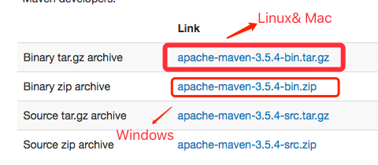
不同平台下载对应的包：
| 系统 | 包名 |
|---|---|
| Windows | apache-maven-3.3.9-bin.zip |
| Linux | apache-maven-3.3.9-bin.tar.gz |
| Mac | apache-maven-3.3.9-bin.tar.gz |
下载包后解压到对应目录：
| 系统 | 存储位置 (可根据自己情况配置) |
|---|---|
| Windows | E:\Maven\apache-maven-3.3.9 |
| Linux | /usr/local/apache-maven-3.3.9 |
| Mac | /usr/local/apache-maven-3.3.9 |
添加环境变量 MAVEN_HOME：
| 系统 | 配置 |
|---|---|
| Windows | 右键 "计算机"，选择 "属性"，之后点击 "高级系统设置"，点击"环境变量"，来设置环境变量，有以下系统变量需要配置： 新建系统变量 MAVEN_HOME，变量值：E:\Maven\apache-maven-3.3.9 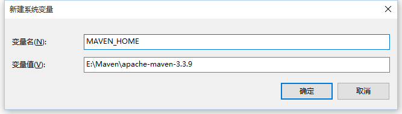 编辑系统变量 Path，添加变量值：;%MAVEN_HOME%\bin 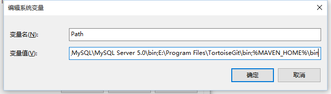 注意：注意多个值之间需要有分号隔开，然后点击确定。 |
| Linux | 下载解压： # wget http://mirrors.hust.edu.cn/apache/maven/maven-3/3.3.9/binaries/apache-maven-3.3.9-bin.tar.gz # tar -xvf apache-maven-3.3.9-bin.tar.gz # sudo mv -f apache-maven-3.3.9 /usr/local/ 编辑 /etc/profile 文件 sudo vim /etc/profile，在文件末尾添加如下代码： export MAVEN_HOME=/usr/local/apache-maven-3.3.9
export PATH=${PATH}:${MAVEN_HOME}/bin
保存文件，并运行如下命令使环境变量生效： # source /etc/profile 在控制台输入如下命令，如果能看到 Maven 相关版本信息，则说明 Maven 已经安装成功： # mvn -v |
| Mac | 下载解压： $ curl -O http://mirrors.hust.edu.cn/apache/maven/maven-3/3.3.9/binaries/apache-maven-3.3.9-bin.tar.gz $ tar -xvf apache-maven-3.3.9-bin.tar.gz $ sudo mv -f apache-maven-3.3.9 /usr/local/ 编辑 /etc/profile 文件 sudo vim /etc/profile，在文件末尾添加如下代码： export MAVEN_HOME=/usr/local/apache-maven-3.3.9
export PATH=${PATH}:${MAVEN_HOME}/bin
保存文件，并运行如下命令使环境变量生效： $ source /etc/profile 在控制台输入如下命令，如果能看到 Maven 相关版本信息，则说明 Maven 已经安装成功： $ mvn -v Apache Maven 3.3.9 (bb52d8502b132ec0a5a3f4c09453c07478323dc5; 2015-11-11T00:41:47+08:00) Maven home: /usr/local/apache-maven-3.3.9 Java version: 1.8.0_31, vendor: Oracle Corporation Java home: /Library/Java/JavaVirtualMachines/jdk1.8.0_31.jdk/Contents/Home/jre Default locale: zh_CN, platform encoding: ISO8859-1 OS name: "mac os x", version: "10.13.4", arch: "x86_64", family: "mac" |
mvn -v # 应输出 Maven 版本和 Java 信息
Maven 默认从远程仓库下载依赖，并存储在本地：
默认本地仓库路径：
Windows: C:\Users\<用户名>\.m2\repository
Linux/macOS: ~/.m2/repository
修改仓库位置（可选）：
在 MAVEN_HOME/conf/settings.xml 中修改：
<localRepository>/path/to/your/repo</localRepository>
运行以下命令生成标准 Java 项目：
mvn archetype:generate \
-DgroupId=com.example \
-DartifactId=my-first-app \
-DarchetypeArtifactId=maven-archetype-quickstart \
-DinteractiveMode=false这会生成一个标准 Maven 项目结构：
my-first-app/ ├── pom.xml # 项目配置文件 ├── src/ │ ├── main/ # 主代码 │ │ └── java/ # Java 源代码 │ └── test/ # 测试代码 │ └── java/ # 测试类
生成的 pom.xml 示例：
<project>
<modelVersion>4.0.0</modelVersion>
<groupId>com.example</groupId> <!-- 组织名 -->
<artifactId>my-first-app</artifactId> <!-- 项目名 -->
<version>1.0-SNAPSHOT</version> <!-- 版本号 -->
<dependencies>
<dependency>
<groupId>junit</groupId> <!-- 测试依赖 -->
<artifactId>junit</artifactId>
<version>4.12</version>
<scope>test</scope> <!-- 仅用于测试 -->
</dependency>
</dependencies>
</project>
mvn compile # 编译项目 mvn test # 运行测试 mvn package # 打包成 .jar 文件 java -jar target/my-first-app-1.0-SNAPSHOT.jar # 运行（如果可执行）
Maven 提供了项目模板（Archetype），可以快速生成标准项目结构。最常用的是 maven-archetype-quickstart（基础 Java 项目模板）。
执行命令：
mvn archetype:generate \
-DgroupId=com.example \
-DartifactId=my-first-app \
-DarchetypeArtifactId=maven-archetype-quickstart \
-DinteractiveMode=false
参数说明：
| 参数 | 说明 |
|---|---|
-DgroupId |
组织名（如公司域名倒写） |
-DartifactId |
项目名称（会成为项目文件夹名） |
-DarchetypeArtifactId |
使用的模板（quickstart 是基础 Java 项目） |
-DinteractiveMode=false |
非交互模式（避免手动确认） |
执行后生成的项目结构：
my-first-app/ ├── pom.xml # Maven 项目配置文件 ├── src/ │ ├── main/ # 主代码目录 │ │ └── java/ # Java 源代码 │ │ └── com/example/App.java # 自动生成的示例类 │ └── test/ # 测试代码目录 │ └── java/ # 测试类 │ └── com/example/AppTest.java # 自动生成的测试类
这是 Maven 的核心配置文件，定义了项目的基本信息和依赖。
生成的 pom.xml 示例：
<project>
<!-- POM 模型版本，固定 4.0.0 -->
<modelVersion>4.0.0</modelVersion>
<!-- 项目坐标（唯一标识） -->
<groupId>com.example</groupId>
<artifactId>my-first-app</artifactId>
<version>1.0-SNAPSHOT</version>
<!-- 项目打包方式（默认 jar，也可以是 war、pom 等） -->
<packaging>jar</packaging>
<!-- 项目名称和 URL（可选） -->
<name>my-first-app</name>
<url>http://www.example.com</url>
<!-- 依赖管理 -->
<dependencies>
<!-- JUnit 测试依赖 -->
<dependency>
<groupId>junit</groupId>
<artifactId>junit</artifactId>
<version>4.12</version>
<scope>test</scope> <!-- 仅用于测试 -->
</dependency>
</dependencies>
</project>
| 目录 | 作用 |
|---|---|
src/main/java |
主 Java 源代码 |
src/main/resources |
配置文件（如 application.properties） |
src/test/java |
测试代码 |
src/test/resources |
测试资源文件 |
主类 App.java
测试类 AppTest.java:
| 命令 | 作用 |
|---|---|
mvn compile | 编译源代码 |
mvn test | 运行测试 |
mvn package | 打包（生成 .jar 文件） |
mvn install | 安装到本地仓库（供其他项目依赖） |
mvn clean | 清理 target 目录 |
1、编译项目：
mvn compile
编译后的 .class 文件会放在 target/classes 目录。
2、运行测试：
mvn test
执行 src/test/java 下的测试类。
测试报告生成在 target/surefire-reports。3、打包：
mvn package
生成 target/my-first-app-1.0-SNAPSHOT.jar。
4、运行程序：
java -cp target/my-first-app-1.0-SNAPSHOT.jar com.example.App
5、输出：
Hello Maven!
例如，添加 Gson 用于 JSON 处理：
修改 pom.xml：
<dependencies>
<!-- 原有 JUnit 依赖 -->
<dependency>
<groupId>junit</groupId>
<artifactId>junit</artifactId>
<version>4.12</version>
<scope>test</scope>
</dependency>
<!-- 新增 Gson 依赖 -->
<dependency>
<groupId>com.google.code.gson</groupId>
<artifactId>gson</artifactId>
<version>2.8.9</version>
</dependency>
</dependencies>运行 mvn compile，Maven 会自动下载 Gson。
重新打包并运行：
mvn package java -cp target/my-first-app-1.0-SNAPSHOT.jar com.example.App
输出：
"Hello Maven with Gson!"
原因：网络问题或仓库不可用。
解决方案：
检查网络连接。
配置国内镜像仓库（如阿里云）：
<!-- 在 settings.xml 或 pom.xml 中配置 -->
<mirror>
<id>aliyun</id>
<url>https://maven.aliyun.com/repository/public</url>
<mirrorOf>central</mirrorOf>
</mirror>
阿里云仓库介绍：https://developer.aliyun.com/mvn/guide。
错误：javac: invalid target release: 11
解决方案：在 pom.xml 中指定 Java 版本：
<properties>
<maven.compiler.source>11</maven.compiler.source>
<maven.compiler.target>11</maven.compiler.target>
</properties>
创建项目：mvn archetype:generate 生成标准结构。
项目结构：
pom.xml 定义依赖和配置。
src/main/java 放主代码，src/test/java 放测试代码。
构建命令：
mvn compile → mvn test → mvn package。
运行：java -jar 或 java -cp 执行 .jar 文件。
POM ( Project Object Model，项目对象模型 ) 是 Maven 的核心配置文件，采用 XML 格式，默认命名为 pom.xml。
POM 是 Maven 工程的基本工作单元，是一个 XML 文件，包含了项目的基本信息，用于描述项目如何构建，声明项目依赖，等等。
执行任务或目标时，Maven 会在当前目录中查找 POM，获取所需的配置信息，然后执行目标。
POM 中可以指定以下配置：
在创建 POM 之前，我们首先需要描述项目组 (groupId), 项目的唯一ID。
<project> <!-- 模型版本 --> <modelVersion>4.0.0</modelVersion> <!-- 公司或者组织的唯一标志，并且配置时生成的路径也是由此生成， 如com.companyname.project-group，maven会将该项目打成的jar包放本地路径：/com/companyname/project-group --> <groupId>com.companyname.project-group</groupId> <!-- 项目的唯一ID，一个groupId下面可能多个项目，就是靠artifactId来区分的 --> <artifactId>project</artifactId> <!-- 版本号 --> <version>1.0</version> </project>所有 POM 文件都需要 project 元素和三个必需字段：groupId，artifactId，version。
| 节点 | 描述 |
|---|---|
| project | 工程的根标签。 |
| modelVersion | 模型版本需要设置为 4.0。 |
| groupId | 这是工程组的标识。它在一个组织或者项目中通常是唯一的。例如，一个银行组织 com.companyname.project-group 拥有所有的和银行相关的项目。 |
| artifactId | 这是工程的标识。它通常是工程的名称。例如，消费者银行。groupId 和 artifactId 一起定义了 artifact 在仓库中的位置。 |
| version |
这是工程的版本号。在 artifact 的仓库中，它用来区分不同的版本。例如： com.company.bank:consumer-banking:1.0 com.company.bank:consumer-banking:1.1 |
POM 文件基本结构：
项目坐标（必须）：
| 元素 | 说明 | 示例 |
|---|---|---|
modelVersion | POM 模型版本（固定 4.0.0） | <modelVersion>4.0.0</modelVersion> |
groupId | 组织/公司标识（反向域名） | <groupId>com.example</groupId> |
artifactId | 项目名称 | <artifactId>my-app</artifactId> |
version | 项目版本 | <version>1.0.0</version> |
packaging | 打包类型（jar/war/pom） | <packaging>jar</packaging> |
元信息（可选）：
| 元素 | 说明 |
|---|---|
name | 项目名称（显示用） |
description | 项目描述 |
url | 项目主页 |
licenses | 许可证信息 |
organization | 组织信息 |
POM文件中可以定义项目的依赖：
<dependencies>
<dependency>
<groupId>junit</groupId>
<artifactId>junit</artifactId>
<version>4.12</version>
<scope>test</scope>
</dependency>
</dependencies>| 元素 | 说明 |
|---|---|
groupId | 依赖的组织标识 |
artifactId | 依赖的项目名 |
version | 依赖的版本 |
scope | 依赖作用域（compile/test/provided/runtime） |
optional | 是否可选依赖（默认 false） |
POM 文件中也可以定义构建过程中的插件：
<build>
<plugins>
<plugin>
<groupId>org.apache.maven.plugins</groupId>
<artifactId>maven-compiler-plugin</artifactId>
<version>3.8.1</version>
<configuration>
<source>1.8</source>
<target>1.8</target>
</configuration>
</plugin>
</plugins>
</build>常用插件：
maven-compiler-plugin：指定 Java 版本
maven-surefire-plugin：控制测试执行
maven-jar-plugin：定制 JAR 包
properties: 定义项目中的一些属性变量。
用于定义变量，避免重复：
<properties>
<java.version>11</java.version>
<project.build.sourceEncoding>UTF-8</project.build.sourceEncoding>
</properties>在依赖中引用：
<version>${java.version}</version>
repositories: 仓库配置。
指定远程仓库：
<repositories>
<repository>
<id>aliyun</id>
<url>https://maven.aliyun.com/repository/public</url>
</repository>
</repositories>
dependencyManagement: 用于管理依赖的版本，特别是在多模块项目中。
<dependencyManagement>
<dependencies>
<dependency>
<groupId>org.springframework</groupId>
<artifactId>spring-core</artifactId>
<version>5.3.9</version>
</dependency>
</dependencies>
</dependencyManagement>profiles: 用于定义不同的构建配置，可以根据不同的环境进行构建。
<profiles>
<profile>
<id>development</id>
<properties>
<environment>dev</environment>
</properties>
</profile>
<profile>
<id>production</id>
<properties>
<environment>prod</environment>
</properties>
</profile>
</profiles>
继承: 通过 parent 元素，一个POM文件可以继承另一个POM文件的配置：
<parent>
<groupId>com.example</groupId>
<artifactId>parent-project</artifactId>
<version>1.0-SNAPSHOT</version>
</parent>聚合: 通过 modules 元素，一个 POM 文件可以管理多个子模块：
<modules>
<module>module1</module>
<module>module2</module>
</modules>完整 POM 简单实例：
父（Super）POM是 Maven 默认的 POM。所有的 POM 都继承自一个父 POM（无论是否显式定义了这个父 POM）。父 POM 包含了一些可以被继承的默认设置。因此，当 Maven 发现需要下载 POM 中的 依赖时，它会到 Super POM 中配置的默认仓库 http://repo1.maven.org/maven2 去下载。
Maven 使用 effective pom（Super pom 加上工程自己的配置）来执行相关的目标，它帮助开发者在 pom.xml 中做尽可能少的配置，当然这些配置可以被重写。
使用以下命令来查看 Super POM 默认配置：
mvn help:effective-pom
接下来我们创建目录 MVN/project，在该目录下创建 pom.xml，内容如下：
<project xmlns = "http://maven.apache.org/POM/4.0.0" xmlns:xsi = "http://www.w3.org/2001/XMLSchema-instance" xsi:schemaLocation = "http://maven.apache.org/POM/4.0.0 http://maven.apache.org/xsd/maven-4.0.0.xsd"> <!-- 模型版本 --> <modelVersion>4.0.0</modelVersion> <!-- 公司或者组织的唯一标志，并且配置时生成的路径也是由此生成， 如com.companyname.project-group，maven会将该项目打成的jar包放本地路径：/com/companyname/project-group --> <groupId>com.companyname.project-group</groupId> <!-- 项目的唯一ID，一个groupId下面可能多个项目，就是靠artifactId来区分的 --> <artifactId>project</artifactId> <!-- 版本号 --> <version>1.0</version> </project>在命令控制台，进入 MVN/project 目录，执行以下命令：
C:\MVN\project>mvn help:effective-pom
Maven 将会开始处理并显示 effective-pom。
[INFO] Scanning for projects... Downloading: https://repo.maven.apache.org/maven2/org/apache/maven/plugins/maven-clean-plugin/2.5/maven-clean-plugin-2.5.pom ... [INFO] ------------------------------------------------------------------------ [INFO] BUILD SUCCESS [INFO] ------------------------------------------------------------------------ [INFO] Total time: 01:36 min [INFO] Finished at: 2018-09-05T11:31:28+08:00 [INFO] Final Memory: 15M/149M [INFO] ------------------------------------------------------------------------
Effective POM 的结果就像在控制台中显示的一样，经过继承、插值之后，使配置生效。
<?xml version="1.0" encoding="UTF-8"?> <!-- ================================================================= --> <!-- --> <!-- Generated by Maven Help Plugin on 2012-07-05T11:41:51 --> <!-- See: http://maven.apache.org/plugins/maven-help-plugin/ --> <!-- --> <!-- ================================================================= --> <!-- ================================================================= --> <!-- --> <!-- Effective POM for project --> <!-- 'com.companyname.project-group:project-name:jar:1.0' --> <!-- --> <!-- ================================================================= --> <project xmlns="http://maven.apache.org/POM/4.0.0" xmlns:xsi="http://www.w3.org/ 2001/XMLSchema-instance" xsi:schemaLocation="http://maven.apache.org/POM/4.0.0 h ttp://maven.apache.org/xsd/maven-4.0.0.xsd"> <modelVersion>4.0.0</modelVersion> <groupId>com.companyname.project-group</groupId> <artifactId>project</artifactId> <version>1.0</version> <build> <sourceDirectory>C:\MVN\project\src\main\java</sourceDirectory> <scriptSourceDirectory>src/main/scripts</scriptSourceDirectory> <testSourceDirectory>C:\MVN\project\src\test\java</testSourceDirectory> <outputDirectory>C:\MVN\project\target\classes</outputDirectory> <testOutputDirectory>C:\MVN\project\target\test-classes</testOutputDirectory> <resources> <resource> <mergeId>resource-0</mergeId> <directory>C:\MVN\project\src\main\resources</directory> </resource> </resources> <testResources> <testResource> <mergeId>resource-1</mergeId> <directory>C:\MVN\project\src\test\resources</directory> </testResource> </testResources> <directory>C:\MVN\project\target</directory> <finalName>project-1.0</finalName> <pluginManagement> <plugins> <plugin> <artifactId>maven-antrun-plugin</artifactId> <version>1.3</version> </plugin> <plugin> <artifactId>maven-assembly-plugin</artifactId> <version>2.2-beta-2</version> </plugin> <plugin> <artifactId>maven-clean-plugin</artifactId> <version>2.2</version> </plugin> <plugin> <artifactId>maven-compiler-plugin</artifactId> <version>2.0.2</version> </plugin> <plugin> <artifactId>maven-dependency-plugin</artifactId> <version>2.0</version> </plugin> <plugin> <artifactId>maven-deploy-plugin</artifactId> <version>2.4</version> </plugin> <plugin> <artifactId>maven-ear-plugin</artifactId> <version>2.3.1</version> </plugin> <plugin> <artifactId>maven-ejb-plugin</artifactId> <version>2.1</version> </plugin> <plugin> <artifactId>maven-install-plugin</artifactId> <version>2.2</version> </plugin> <plugin> <artifactId>maven-jar-plugin</artifactId> <version>2.2</version> </plugin> <plugin> <artifactId>maven-javadoc-plugin</artifactId> <version>2.5</version> </plugin> <plugin> <artifactId>maven-plugin-plugin</artifactId> <version>2.4.3</version> </plugin> <plugin> <artifactId>maven-rar-plugin</artifactId> <version>2.2</version> </plugin> <plugin> <artifactId>maven-release-plugin</artifactId> <version>2.0-beta-8</version> </plugin> <plugin> <artifactId>maven-resources-plugin</artifactId> <version>2.3</version> </plugin> <plugin> <artifactId>maven-site-plugin</artifactId> <version>2.0-beta-7</version> </plugin> <plugin> <artifactId>maven-source-plugin</artifactId> <version>2.0.4</version> </plugin> <plugin> <artifactId>maven-surefire-plugin</artifactId> <version>2.4.3</version> </plugin> <plugin> <artifactId>maven-war-plugin</artifactId> <version>2.1-alpha-2</version> </plugin> </plugins> </pluginManagement> <plugins> <plugin> <artifactId>maven-help-plugin</artifactId> <version>2.1.1</version> </plugin> </plugins> </build> <repositories> <repository> <snapshots> <enabled>false</enabled> </snapshots> <id>central</id> <name>Maven Repository Switchboard</name> <url>http://repo1.maven.org/maven2</url> </repository> </repositories> <pluginRepositories> <pluginRepository> <releases> <updatePolicy>never</updatePolicy> </releases> <snapshots> <enabled>false</enabled> </snapshots> <id>central</id> <name>Maven Plugin Repository</name> <url>http://repo1.maven.org/maven2</url> </pluginRepository> </pluginRepositories> <reporting> <outputDirectory>C:\MVN\project\target/site</outputDirectory> </reporting> </project>在上面的 pom.xml 中，你可以看到 Maven 在执行目标时需要用到的默认工程源码目录结构、输出目录、需要的插件、仓库和报表目录。
Maven 的 pom.xml 文件也不需要手工编写。
Maven 提供了大量的原型插件来创建工程，包括工程结构和 pom.xml。
以下是对 pom.xml 中所有重要标签的分类说明，涵盖 项目信息、依赖管理、构建配置、环境设置 等核心内容。
所有 POM 文件必须包含的标签： modelVersion、groupId、artifactId 和 version。
| 标签 | 类别 | 说明 | 示例/可选值 | 是否必需 |
|---|---|---|---|---|
| 基础信息 | ||||
<modelVersion> |
项目结构 | POM模型版本 | 4.0.0 |
是 |
<groupId> |
坐标 | 组织标识（反向域名） | com.example |
是 |
<artifactId> |
坐标 | 项目名称 | my-project |
是 |
<version> |
坐标 | 项目版本 | 1.0.0-SNAPSHOT |
是 |
<packaging> |
项目类型 | 打包格式 | jar/war/pom |
否（默认jar） |
<name> |
元信息 | 项目显示名称 | My Application |
否 |
<description> |
元信息 | 项目描述 | A demo project |
否 |
<url> |
元信息 | 项目主页URL | https://example.com |
否 |
| 依赖管理 | ||||
<dependencies> |
依赖 | 依赖列表容器 | 包含多个<dependency> |
否 |
<dependency> |
依赖 | 单个依赖定义 | 包含groupId等子标签 |
可选 |
<scope> |
依赖 | 依赖作用域 | compile/test/provided/runtime |
否（默认compile） |
<optional> |
依赖 | 是否可选依赖 | true/false |
否（默认false） |
<exclusions> |
依赖 | 排除传递性依赖 | 包含<exclusion>列表 |
否 |
| 构建配置 | ||||
<build> |
构建 | 构建配置容器 | 包含插件/资源等配置 | 否 |
<plugins> |
构建 | 插件列表容器 | 包含多个<plugin> |
否 |
<plugin> |
构建 | 单个插件定义 | 需指定groupId和artifactId |
可选 |
<resources> |
构建 | 资源文件配置 | 定义<resource>路径 |
否 |
<testResources> |
构建 | 测试资源文件配置 | 类似<resources> |
否 |
<finalName> |
构建 | 最终打包文件名 | my-app |
否 |
| 环境配置 | ||||
<properties> |
配置 | 自定义变量容器 | 定义键值对 | 否 |
<java.version> |
属性 | Java版本变量 | 11/17等 |
否 |
<repositories> |
仓库 | 自定义远程仓库列表 | 包含<repository> |
否 |
<pluginRepositories> |
仓库 | 自定义插件仓库 | 类似<repositories> |
否 |
| 多模块管理 | ||||
<modules> |
模块 | 子模块列表 | 包含多个<module> |
聚合项目需要 |
<parent> |
继承 | 父POM引用 | 需指定父项目坐标 | 继承项目需要 |
<dependencyManagement> |
依赖 | 统一管理依赖版本 | 定义版本但不引入 | 否 |
<profiles> |
配置 | 环境profile容器 | 定义不同环境配置 | 否 |
| 其他信息 | ||||
<licenses> |
法律 | 许可证信息 | 包含<license> |
否 |
<developers> |
人员 | 开发者列表 | 包含<developer> |
否 |
<contributors> |
人员 | 贡献者列表 | 类似<developers> |
否 |
<issueManagement> |
管理 | 问题跟踪系统 | 定义issue系统URL | 否 |
Maven 构建生命周期定义了一个项目构建跟发布的过程，包含三个标准生命周期：
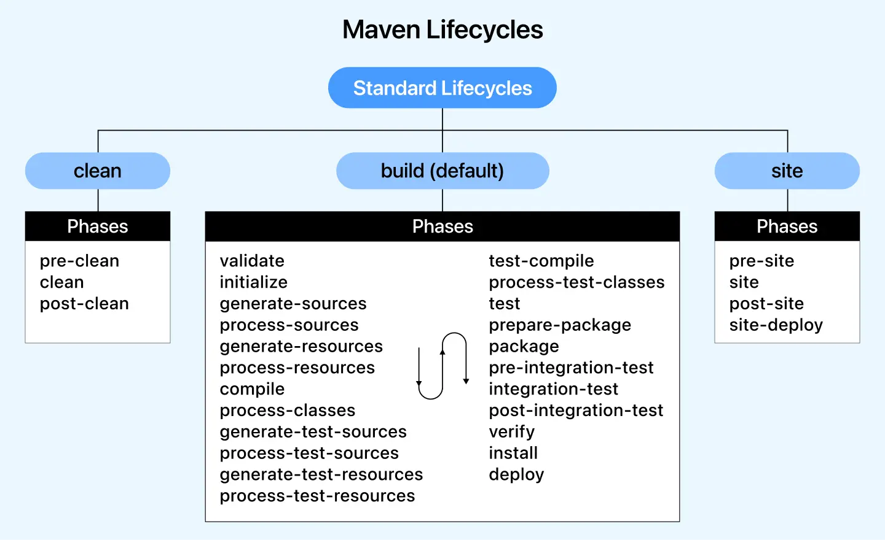
每个生命周期由多个阶段（phase）组成，执行时按顺序运行。
clean 生命周期负责清理项目的临时文件和目录（主要是target/），包含以下主要阶段：
| 阶段 | 说明 | 自动绑定的插件目标 |
|---|---|---|
pre-clean | 清理前的准备工作 | 无默认绑定 |
clean | 删除target/目录 | maven-clean-plugin:clean |
post-clean | 清理后的收尾工作 | 无默认绑定 |
常用命令:
mvn clean # 执行clean阶段（包含pre-clean和clean）
default 生命周期是 Maven 最主要的生命周期，包含项目构建和部署的所有核心步骤。
一个典型的 Maven 构建（build）生命周期是由以下几个阶段的序列组成的：
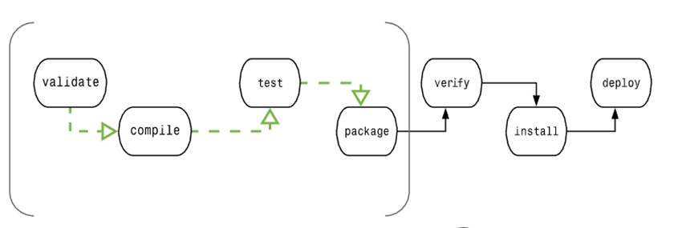
| 阶段 | 处理 | 描述 |
|---|---|---|
| 验证 validate | 验证项目 | 验证项目是否正确且所有必须信息是可用的 |
| 编译 compile | 执行编译 | 源代码编译在此阶段完成 |
| 测试 Test | 测试 | 使用适当的单元测试框架（例如JUnit）运行测试。 |
| 包装 package | 打包 | 将编译后的代码打包成可分发的格式，例如 JAR 或 WAR |
| 检查 verify | 检查 | 对集成测试的结果进行检查，以保证质量达标 |
| 安装 install | 安装 | 安装打包的项目到本地仓库，以供其他项目使用 |
| 部署 deploy | 部署 | 拷贝最终的工程包到远程仓库中，以共享给其他开发人员和工程 |
为了完成 default 生命周期，这些阶段（包括其他未在上面罗列的生命周期阶段）将被按顺序地执行。
阶段依赖关系:
常用命令:
mvn compile # 编译主代码 mvn test # 运行测试 mvn package # 打包（生成target/*.jar） mvn install # 安装到本地仓库（~/.m2/repository） mvn deploy # 部署到远程仓库（需配置distributionManagement）
site 生命周期用于生成项目站点文档：
| 阶段 | 说明 | 自动绑定的插件目标 |
|---|---|---|
pre-site | 生成站点前的准备 | 无默认绑定 |
site | 生成项目站点文档 | maven-site-plugin:site |
post-site | 站点生成后的收尾 | 无默认绑定 |
site-deploy | 部署站点到服务器 | maven-site-plugin:deploy |
常用命令:
mvn site # 生成站点（输出在target/site/） mvn site-deploy # 部署站点（需配置site URL）
Maven 有以下三个标准的生命周期：
1、Clean 生命周期：
2、Default 生命周期（也称为 Build 生命周期）：
3、Site 生命周期：
一个插件目标代表一个特定的任务（比构建阶段更为精细），这有助于项目的构建和管理。这些目标可能被绑定到多个阶段或者无绑定。不绑定到任何构建阶段的目标可以在构建生命周期之外通过直接调用执行。这些目标的执行顺序取决于调用目标和构建阶段的顺序。
例如，考虑下面的命令：
clean 和 pakage 是构建阶段，dependency:copy-dependencies 是目标
mvn clean dependency:copy-dependencies package
这里的 clean 阶段将会被首先执行，然后 dependency:copy-dependencies 目标会被执行，最终 package 阶段被执行。
当我们执行 mvn post-clean 命令时，Maven 调用 clean 生命周期，它包含以下阶段：
mvn clean 中的 clean 就是上面的 clean，在一个生命周期中，运行某个阶段的时候，它之前的所有阶段都会被运行，也就是说，如果执行 mvn clean 将运行以下两个生命周期阶段：
pre-clean, clean
如果我们运行 mvn post-clean ，则运行以下三个生命周期阶段：
pre-clean, clean, post-clean
我们可以通过在上面的 clean 生命周期的任何阶段定义目标来修改这部分的操作行为。
在下面的例子中，我们将 maven-antrun-plugin:run 目标添加到 pre-clean、clean 和 post-clean 阶段中。这样我们可以在 clean 生命周期的各个阶段显示文本信息。
我们已经在 C:\MVN\project 目录下创建了一个 pom.xml 文件。
<project xmlns="http://maven.apache.org/POM/4.0.0" xmlns:xsi="http://www.w3.org/2001/XMLSchema-instance" xsi:schemaLocation="http://maven.apache.org/POM/4.0.0 http://maven.apache.org/xsd/maven-4.0.0.xsd"> <modelVersion>4.0.0</modelVersion> <groupId>com.companyname.projectgroup</groupId> <artifactId>project</artifactId> <version>1.0</version> <build> <plugins> <plugin> <groupId>org.apache.maven.plugins</groupId> <artifactId>maven-antrun-plugin</artifactId> <version>1.1</version> <executions> <execution> <id>id.pre-clean</id> <phase>pre-clean</phase> <goals> <goal>run</goal> </goals> <configuration> <tasks> <echo>pre-clean phase</echo> </tasks> </configuration> </execution> <execution> <id>id.clean</id> <phase>clean</phase> <goals> <goal>run</goal> </goals> <configuration> <tasks> <echo>clean phase</echo> </tasks> </configuration> </execution> <execution> <id>id.post-clean</id> <phase>post-clean</phase> <goals> <goal>run</goal> </goals> <configuration> <tasks> <echo>post-clean phase</echo> </tasks> </configuration> </execution> </executions> </plugin> </plugins> </build> </project>现在打开命令控制台，跳转到 pom.xml 所在目录，并执行下面的 mvn 命令。
C:\MVN\project>mvn post-clean
Maven 将会开始处理并显示 clean 生命周期的所有阶段。
[INFO] Scanning for projects...
[INFO] ------------------------------------------------------------------
[INFO] Building Unnamed - com.companyname.projectgroup:project:jar:1.0
[INFO] task-segment: [post-clean]
[INFO] ------------------------------------------------------------------
[INFO] [antrun:run {execution: id.pre-clean}]
[INFO] Executing tasks
[echo] pre-clean phase
[INFO] Executed tasks
[INFO] [clean:clean {execution: default-clean}]
[INFO] [antrun:run {execution: id.clean}]
[INFO] Executing tasks
[echo] clean phase
[INFO] Executed tasks
[INFO] [antrun:run {execution: id.post-clean}]
[INFO] Executing tasks
[echo] post-clean phase
[INFO] Executed tasks
[INFO] ------------------------------------------------------------------
[INFO] BUILD SUCCESSFUL
[INFO] ------------------------------------------------------------------
[INFO] Total time: < 1 second
[INFO] Finished at: Sat Jul 07 13:38:59 IST 2012
[INFO] Final Memory: 4M/44M
[INFO] ------------------------------------------------------------------你可以尝试修改 mvn clean 命令，来显示 pre-clean 和 clean，而在 post-clean 阶段不执行任何操作。
这是 Maven 的主要生命周期，被用于构建应用，包括下面的 23 个阶段：
| 生命周期阶段 | 描述 |
|---|---|
| validate（校验） | 校验项目是否正确并且所有必要的信息可以完成项目的构建过程。 |
| initialize（初始化） | 初始化构建状态，比如设置属性值。 |
| generate-sources（生成源代码） | 生成包含在编译阶段中的任何源代码。 |
| process-sources（处理源代码） | 处理源代码，比如说，过滤任意值。 |
| generate-resources（生成资源文件） | 生成将会包含在项目包中的资源文件。 |
| process-resources （处理资源文件） | 复制和处理资源到目标目录，为打包阶段最好准备。 |
| compile（编译） | 编译项目的源代码。 |
| process-classes（处理类文件） | 处理编译生成的文件，比如说对Java class文件做字节码改善优化。 |
| generate-test-sources（生成测试源代码） | 生成包含在编译阶段中的任何测试源代码。 |
| process-test-sources（处理测试源代码） | 处理测试源代码，比如说，过滤任意值。 |
| generate-test-resources（生成测试资源文件） | 为测试创建资源文件。 |
| process-test-resources（处理测试资源文件） | 复制和处理测试资源到目标目录。 |
| test-compile（编译测试源码） | 编译测试源代码到测试目标目录. |
| process-test-classes（处理测试类文件） | 处理测试源码编译生成的文件。 |
| test（测试） | 使用合适的单元测试框架运行测试（Juint是其中之一）。 |
| prepare-package（准备打包） | 在实际打包之前，执行任何的必要的操作为打包做准备。 |
| package（打包） | 将编译后的代码打包成可分发格式的文件，比如JAR、WAR或者EAR文件。 |
| pre-integration-test（集成测试前） | 在执行集成测试前进行必要的动作。比如说，搭建需要的环境。 |
| integration-test（集成测试） | 处理和部署项目到可以运行集成测试环境中。 |
| post-integration-test（集成测试后） | 在执行集成测试完成后进行必要的动作。比如说，清理集成测试环境。 |
| verify （验证） | 运行任意的检查来验证项目包有效且达到质量标准。 |
| install（安装） | 安装项目包到本地仓库，这样项目包可以用作其他本地项目的依赖。 |
| deploy（部署） | 将最终的项目包复制到远程仓库中与其他开发者和项目共享。 |
有一些与 Maven 生命周期相关的重要概念需要说明：
当一个阶段通过 Maven 命令调用时，例如 mvn compile，只有该阶段之前以及包括该阶段在内的所有阶段会被执行。
不同的 maven 目标将根据打包的类型（JAR / WAR / EAR），被绑定到不同的 Maven 生命周期阶段。
在下面的例子中，我们将 maven-antrun-plugin:run 目标添加到 Build 生命周期的一部分阶段中。这样我们可以显示生命周期的文本信息。
我们已经更新了 C:\MVN\project 目录下的 pom.xml 文件。
<project xmlns="http://maven.apache.org/POM/4.0.0" xmlns:xsi="http://www.w3.org/2001/XMLSchema-instance" xsi:schemaLocation="http://maven.apache.org/POM/4.0.0 http://maven.apache.org/xsd/maven-4.0.0.xsd"> <modelVersion>4.0.0</modelVersion> <groupId>com.companyname.projectgroup</groupId> <artifactId>project</artifactId> <version>1.0</version> <build> <plugins> <plugin> <groupId>org.apache.maven.plugins</groupId> <artifactId>maven-antrun-plugin</artifactId> <version>1.1</version> <executions> <execution> <id>id.validate</id> <phase>validate</phase> <goals> <goal>run</goal> </goals> <configuration> <tasks> <echo>validate phase</echo> </tasks> </configuration> </execution> <execution> <id>id.compile</id> <phase>compile</phase> <goals> <goal>run</goal> </goals> <configuration> <tasks> <echo>compile phase</echo> </tasks> </configuration> </execution> <execution> <id>id.test</id> <phase>test</phase> <goals> <goal>run</goal> </goals> <configuration> <tasks> <echo>test phase</echo> </tasks> </configuration> </execution> <execution> <id>id.package</id> <phase>package</phase> <goals> <goal>run</goal> </goals> <configuration> <tasks> <echo>package phase</echo> </tasks> </configuration> </execution> <execution> <id>id.deploy</id> <phase>deploy</phase> <goals> <goal>run</goal> </goals> <configuration> <tasks> <echo>deploy phase</echo> </tasks> </configuration> </execution> </executions> </plugin> </plugins> </build> </project>现在打开命令控制台，跳转到 pom.xml 所在目录，并执行以下 mvn 命令。
C:\MVN\project>mvn compile
Maven 将会开始处理并显示直到编译阶段的构建生命周期的各个阶段。
[INFO] Scanning for projects...
[INFO] ------------------------------------------------------------------
[INFO] Building Unnamed - com.companyname.projectgroup:project:jar:1.0
[INFO] task-segment: [compile]
[INFO] ------------------------------------------------------------------
[INFO] [antrun:run {execution: id.validate}]
[INFO] Executing tasks
[echo] validate phase
[INFO] Executed tasks
[INFO] [resources:resources {execution: default-resources}]
[WARNING] Using platform encoding (Cp1252 actually) to copy filtered resources,
i.e. build is platform dependent!
[INFO] skip non existing resourceDirectory C:\MVN\project\src\main\resources
[INFO] [compiler:compile {execution: default-compile}]
[INFO] Nothing to compile - all classes are up to date
[INFO] [antrun:run {execution: id.compile}]
[INFO] Executing tasks
[echo] compile phase
[INFO] Executed tasks
[INFO] ------------------------------------------------------------------
[INFO] BUILD SUCCESSFUL
[INFO] ------------------------------------------------------------------
[INFO] Total time: 2 seconds
[INFO] Finished at: Sat Jul 07 20:18:25 IST 2012
[INFO] Final Memory: 7M/64M
[INFO] ------------------------------------------------------------------
在开发环境中，使用下面的命令去构建、安装工程到本地仓库
mvn install
这个命令在执行 install 阶段前，按顺序执行了 default 生命周期的阶段 （validate，compile，package，等等），我们只需要调用最后一个阶段，如这里是 install。
在构建环境中，使用下面的调用来纯净地构建和部署项目到共享仓库中
mvn clean deploy
这行命令也可以用于多模块的情况下，即包含多个子项目的项目，Maven 会在每一个子项目执行 clean 命令，然后再执行 deploy 命令。
Maven Site 插件一般用来创建新的报告文档、部署站点等。
这里经常用到的是site阶段和site-deploy阶段，用以生成和发布Maven站点，这可是Maven相当强大的功能，Manager比较喜欢，文档及统计数据自动生成，很好看。 在下面的例子中，我们将 maven-antrun-plugin:run 目标添加到 Site 生命周期的所有阶段中。这样我们可以显示生命周期的所有文本信息。
我们已经更新了 C:\MVN\project 目录下的 pom.xml 文件。
<project xmlns="http://maven.apache.org/POM/4.0.0" xmlns:xsi="http://www.w3.org/2001/XMLSchema-instance" xsi:schemaLocation="http://maven.apache.org/POM/4.0.0 http://maven.apache.org/xsd/maven-4.0.0.xsd"> <modelVersion>4.0.0</modelVersion> <groupId>com.companyname.projectgroup</groupId> <artifactId>project</artifactId> <version>1.0</version> <build> <plugins> <plugin> <groupId>org.apache.maven.plugins</groupId> <artifactId>maven-antrun-plugin</artifactId> <version>1.1</version> <executions> <execution> <id>id.pre-site</id> <phase>pre-site</phase> <goals> <goal>run</goal> </goals> <configuration> <tasks> <echo>pre-site phase</echo> </tasks> </configuration> </execution> <execution> <id>id.site</id> <phase>site</phase> <goals> <goal>run</goal> </goals> <configuration> <tasks> <echo>site phase</echo> </tasks> </configuration> </execution> <execution> <id>id.post-site</id> <phase>post-site</phase> <goals> <goal>run</goal> </goals> <configuration> <tasks> <echo>post-site phase</echo> </tasks> </configuration> </execution> <execution> <id>id.site-deploy</id> <phase>site-deploy</phase> <goals> <goal>run</goal> </goals> <configuration> <tasks> <echo>site-deploy phase</echo> </tasks> </configuration> </execution> </executions> </plugin> </plugins> </build> </project>现在打开命令控制台，跳转到 pom.xml 所在目录，并执行以下 mvn 命令。
C:\MVN\project>mvn site
Maven 将会开始处理并显示直到 site 阶段的 site 生命周期的各个阶段。
[INFO] Scanning for projects...
[INFO] ------------------------------------------------------------------
[INFO] Building Unnamed - com.companyname.projectgroup:project:jar:1.0
[INFO] task-segment: [site]
[INFO] ------------------------------------------------------------------
[INFO] [antrun:run {execution: id.pre-site}]
[INFO] Executing tasks
[echo] pre-site phase
[INFO] Executed tasks
[INFO] [site:site {execution: default-site}]
[INFO] Generating "About" report.
[INFO] Generating "Issue Tracking" report.
[INFO] Generating "Project Team" report.
[INFO] Generating "Dependencies" report.
[INFO] Generating "Project Plugins" report.
[INFO] Generating "Continuous Integration" report.
[INFO] Generating "Source Repository" report.
[INFO] Generating "Project License" report.
[INFO] Generating "Mailing Lists" report.
[INFO] Generating "Plugin Management" report.
[INFO] Generating "Project Summary" report.
[INFO] [antrun:run {execution: id.site}]
[INFO] Executing tasks
[echo] site phase
[INFO] Executed tasks
[INFO] ------------------------------------------------------------------
[INFO] BUILD SUCCESSFUL
[INFO] ------------------------------------------------------------------
[INFO] Total time: 3 seconds
[INFO] Finished at: Sat Jul 07 15:25:10 IST 2012
[INFO] Final Memory: 24M/149M
[INFO] ------------------------------------------------------------------```
构建配置文件是一系列的配置项的值，可以用来设置或者覆盖 Maven 构建默认值。
使用构建配置文件，你可以为不同的环境，比如说生产环境（Production）和开发（Development）环境，定制构建方式。
配置文件在 pom.xml 文件中使用 activeProfiles 或者 profiles 元素指定，并且可以通过各种方式触发。配置文件在构建时修改 POM，并且用来给参数设定不同的目标环境（比如说，开发（Development）、测试（Testing）和生产环境（Production）中数据库服务器的地址）。
构建配置文件大体上有三种类型:
| 类型 | 在哪定义 |
|---|---|
| 项目级（Per Project） | 定义在项目的POM文件pom.xml中 |
| 用户级 （Per User） | 定义在Maven的设置xml文件中 (%USER_HOME%/.m2/settings.xml) |
| 全局（Global） | 定义在 Maven 全局的设置 xml 文件中 (%M2_HOME%/conf/settings.xml) |
Maven的构建配置文件可以通过多种方式激活。
假定项目结构如下：
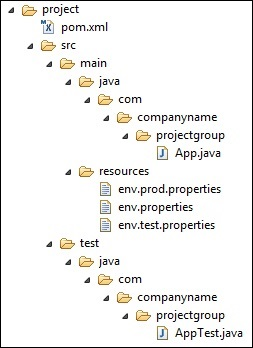
其中在src/main/resources文件夹下有三个用于测试文件：
| 文件名 | 描述 |
|---|---|
| env.properties | 如果未指定配置文件时默认使用的配置。 |
| env.test.properties | 当测试配置文件使用时的测试配置。 |
| env.prod.properties | 当生产配置文件使用时的生产配置。 |
注意：这三个配置文件并不是代表构建配置文件的功能，而是用于本次测试的目的；比如，我指定了构建配置文件为 prod 时，项目就使用 env.prod.properties文件。
注意：下面的例子仍然是使用 AntRun 插件，因为此插件能绑定 Maven 生命周期阶段，并通过 Ant 的标签不用编写一点代码即可输出信息、复制文件等，经此而已。其余的与本次构建配置文件无关。
profile 可以让我们定义一系列的配置信息，然后指定其激活条件。这样我们就可以定义多个 profile，然后每个 profile 对应不同的激活条件和配置信息，从而达到不同环境使用不同配置信息的效果。
以下实例，我们将 maven-antrun-plugin:run 目标添加到测试阶段中。这样我们可以在不同的 profile 中输出文本信息。我们将使用 pom.xml 来定义不同的 profile，并在命令控制台中使用 maven 命令激活 profile。
pom.xml 文件如下：
<project xmlns="http://maven.apache.org/POM/4.0.0" xmlns:xsi="http://www.w3.org/2001/XMLSchema-instance" xsi:schemaLocation="http://maven.apache.org/POM/4.0.0 http://maven.apache.org/maven-v4_0_0.xsd"> <modelVersion>4.0.0</modelVersion> <groupId>com.jsoft.test</groupId> <artifactId>testproject</artifactId> <packaging>jar</packaging> <version>0.1-SNAPSHOT</version> <name>testproject</name> <url>http://maven.apache.org</url> <dependencies> <dependency> <groupId>junit</groupId> <artifactId>junit</artifactId> <version>3.8.1</version> <scope>test</scope> </dependency> </dependencies> <profiles> <profile> <id>test</id> <build> <plugins> <plugin> <groupId>org.apache.maven.plugins</groupId> <artifactId>maven-antrun-plugin</artifactId> <version>1.8</version> <executions> <execution> <phase>test</phase> <goals> <goal>run</goal> </goals> <configuration> <tasks> <echo>Using env.test.properties</echo> <copy file="src/main/resources/env.test.properties" tofile="${project.build.outputDirectory}/env.properties" overwrite="true"/> </tasks> </configuration> </execution> </executions> </plugin> </plugins> </build> </profile> <profile> <id>normal</id> <build> <plugins> <plugin> <groupId>org.apache.maven.plugins</groupId> <artifactId>maven-antrun-plugin</artifactId> <version>1.8</version> <executions> <execution> <phase>test</phase> <goals> <goal>run</goal> </goals> <configuration> <tasks> <echo>Using env.properties</echo> <copy file="src/main/resources/env.properties" tofile="${project.build.outputDirectory}/env.properties" overwrite="true"/> </tasks> </configuration> </execution> </executions> </plugin> </plugins> </build> </profile> <profile> <id>prod</id> <build> <plugins> <plugin> <groupId>org.apache.maven.plugins</groupId> <artifactId>maven-antrun-plugin</artifactId> <version>1.8</version> <executions> <execution> <phase>test</phase> <goals> <goal>run</goal> </goals> <configuration> <tasks> <echo>Using env.prod.properties</echo> <copy file="src/main/resources/env.prod.properties" tofile="${project.build.outputDirectory}/env.properties" overwrite="true"/> </tasks> </configuration> </execution> </executions> </plugin> </plugins> </build> </profile> </profiles> </project>注意：构建配置文件采用的是 <profiles> 节点。
说明：上面新建了三个 <profiles>，其中 <id> 区分了不同的 <profiles> 执行不同的 AntRun 任务；而 AntRun 的任务可以这么理解，AntRun 监听 test 的 Maven 生命周期阶段，当 Maven 执行 test 时，就触发了 AntRun 的任务，任务里面为输出文本并复制文件到指定的位置；而至于要执行哪个 AntRun 任务，此时构建配置文件起到了传输指定的作用，比如，通过命令行参数输入指定的 <id>。
执行命令：
mvn test -Ptest
提示：第一个 test 为 Maven 生命周期阶段，第 2 个 test 为构建配置文件指定的 <id> 参数，这个参数通过 -P 来传输，当然，它可以是 prod 或者 normal 这些由你定义的<id>。
运行的结果如下：
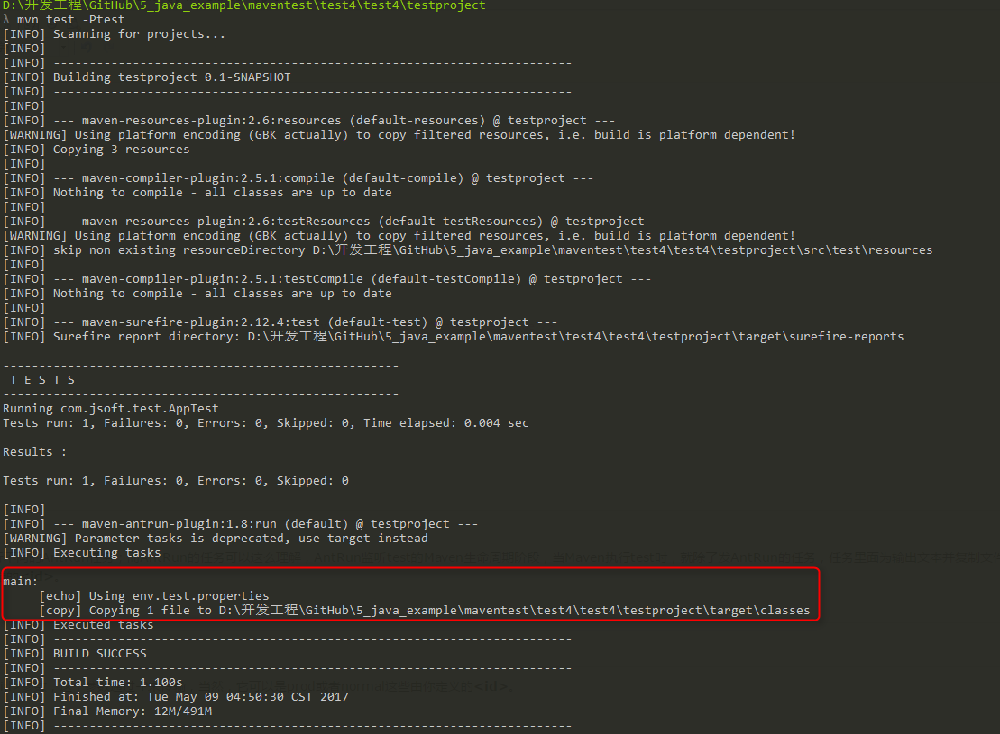
可以看出成功的触发了AntRun的任务。并且是对应构建配置文件下的 <id> 为 test 的任务。
再测试其余两个命令，结果如下：
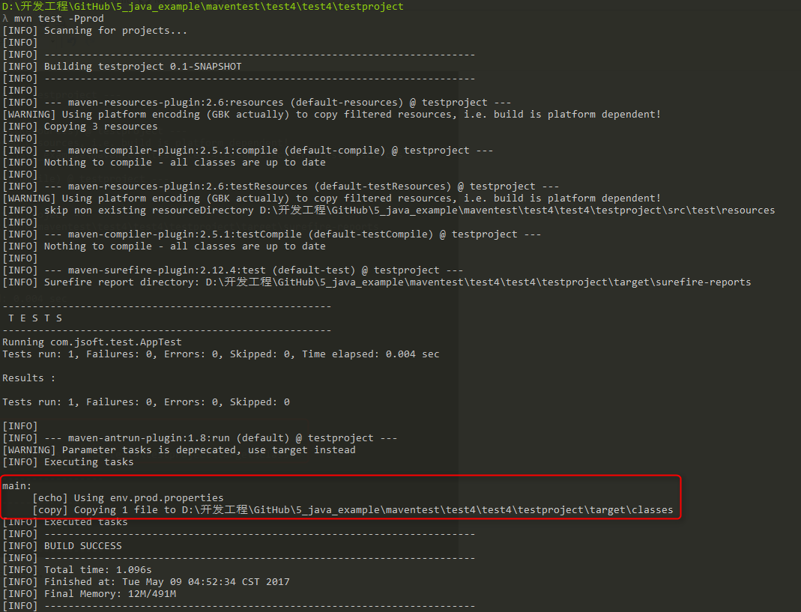
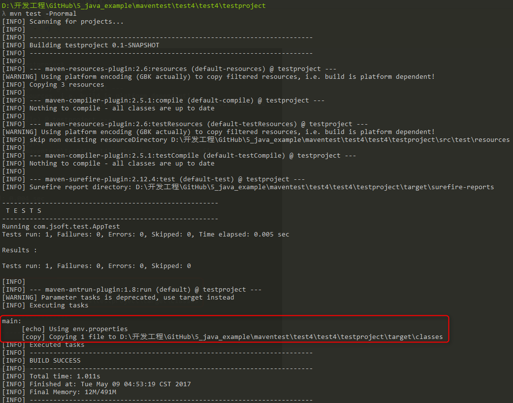
打开 %USER_HOME%/.m2 目录下的 settings.xml 文件，其中 %USER_HOME% 代表用户主目录。如果 setting.xml 文件不存在就直接拷贝 %M2_HOME%/conf/settings.xml 到 .m2 目录，其中 %M2_HOME% 代表 Maven 的安装目录。
配置 setting.xml 文件，增加 <activeProfiles>属性：
执行命令：
mvn test
提示 1：此时不需要使用 -Ptest 来输入参数了，上面的 setting.xml 文件的 <activeprofile> 已经指定了 test 参数代替了。
提示 2：同样可以使用在 %M2_HOME%/conf/settings.xml 的文件进行配置，效果一致。
执行结果：
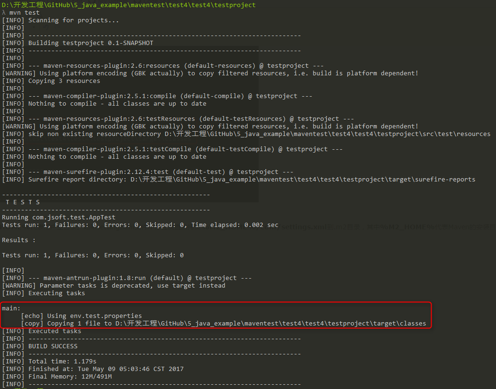
先把上一步测试的 setting.xml 值全部去掉。
然后在 pom.xml 里面的 <id> 为 test 的 <profile> 节点，加入 <activation> 节点：
<project xmlns="http://maven.apache.org/POM/4.0.0" xmlns:xsi="http://www.w3.org/2001/XMLSchema-instance" xsi:schemaLocation="http://maven.apache.org/POM/4.0.0 http://maven.apache.org/maven-v4_0_0.xsd"> <modelVersion>4.0.0</modelVersion> <groupId>com.jsoft.test</groupId> <artifactId>testproject</artifactId> <packaging>jar</packaging> <version>0.1-SNAPSHOT</version> <name>testproject</name> <url>http://maven.apache.org</url> <dependencies> <dependency> <groupId>junit</groupId> <artifactId>junit</artifactId> <version>3.8.1</version> <scope>test</scope> </dependency> </dependencies> <profiles> <profile> <id>test</id> <activation> <property> <name>env</name> <value>test</value> </property> </activation> <build> <plugins> <plugin> <groupId>org.apache.maven.plugins</groupId> <artifactId>maven-antrun-plugin</artifactId> <version>1.8</version> <executions> <execution> <phase>test</phase> <goals> <goal>run</goal> </goals> <configuration> <tasks> <echo>Using env.test.properties</echo> <copy file="src/main/resources/env.test.properties" tofile="${project.build.outputDirectory}/env.properties" overwrite="true"/> </tasks> </configuration> </execution> </executions> </plugin> </plugins> </build> </profile> <profile> <id>normal</id> <build> <plugins> <plugin> <groupId>org.apache.maven.plugins</groupId> <artifactId>maven-antrun-plugin</artifactId> <version>1.8</version> <executions> <execution> <phase>test</phase> <goals> <goal>run</goal> </goals> <configuration> <tasks> <echo>Using env.properties</echo> <copy file="src/main/resources/env.properties" tofile="${project.build.outputDirectory}/env.properties" overwrite="true"/> </tasks> </configuration> </execution> </executions> </plugin> </plugins> </build> </profile> <profile> <id>prod</id> <build> <plugins> <plugin> <groupId>org.apache.maven.plugins</groupId> <artifactId>maven-antrun-plugin</artifactId> <version>1.8</version> <executions> <execution> <phase>test</phase> <goals> <goal>run</goal> </goals> <configuration> <tasks> <echo>Using env.prod.properties</echo> <copy file="src/main/resources/env.prod.properties" tofile="${project.build.outputDirectory}/env.properties" overwrite="true"/> </tasks> </configuration> </execution> </executions> </plugin> </plugins> </build> </profile> </profiles> </project>执行命令：
mvn test -Denv=test
提示 1：上面使用 -D 传递环境变量，其中 env 对应刚才设置的 <name> 值，test 对应<value>。
提示 2：在 Windows 10 上测试了系统的环境变量，但是不生效，所以，只能通过 -D 传递。
执行结果：
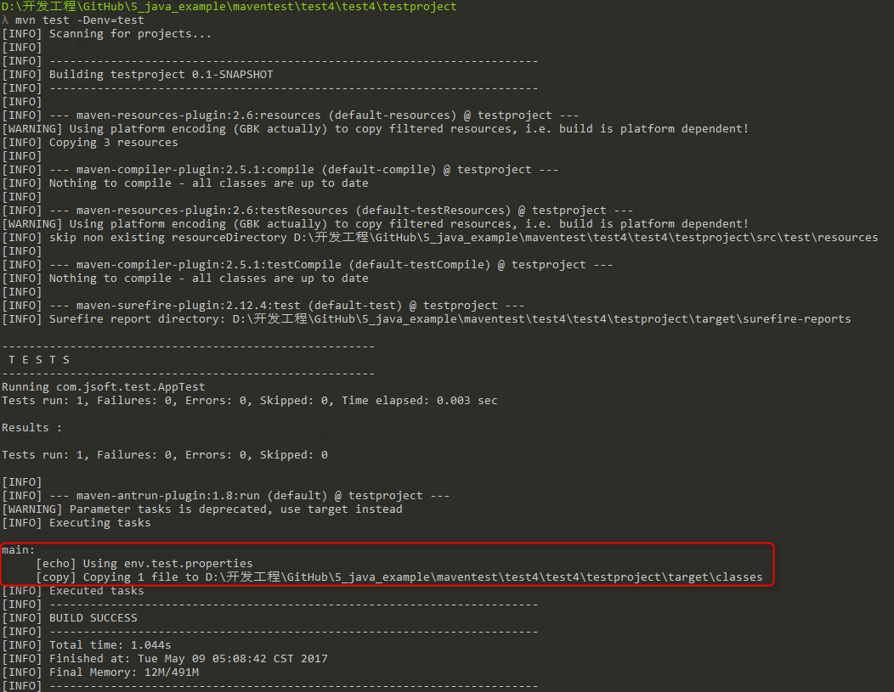
activation 元素包含下面的操作系统信息。当系统为 windows XP 时，test Profile 将会被触发。
<profile> <id>test</id> <activation> <os> <name>Windows XP</name> <family>Windows</family> <arch>x86</arch> <version>5.1.2600</version> </os> </activation> </profile>现在打开命令控制台，跳转到 pom.xml 所在目录，并执行下面的 mvn 命令。不要使用 -P 选项指定 Profile 的名称。Maven 将显示被激活的 test Profile 的结果。
mvn test
现在使用 activation 元素包含下面的操作系统信息。当 target/generated-sources/axistools/wsdl2java/com/companyname/group 缺失时，test Profile 将会被触发。
<profile> <id>test</id> <activation> <file> <missing>target/generated-sources/axistools/wsdl2java/ com/companyname/group</missing> </file> </activation> </profile>现在打开命令控制台，跳转到 pom.xml 所在目录，并执行下面的 mvn 命令。不要使用 -P 选项指定 Profile 的名称。Maven 将显示被激活的 test Profile 的结果。
mvn test
参考：https://www.cnblogs.com/EasonJim/p/6828743.html
Maven 命令遵循以下模式：
mvn [选项] [生命周期阶段] [目标]
这个命令会显示已安装的 Maven 版本、Java 版本等信息。
Maven 基于构建生命周期的概念，包含三个主要的生命周期：
这个命令会删除 target 目录，即删除所有构建生成的文件。
编译源代码，编译后的 class 文件会放在 target/classes 目录下。
运行项目中的所有测试用例。
根据 POM 文件中指定的打包类型（如 jar、war）打包项目。
将项目构建并安装到本地 Maven 仓库，供其他项目依赖使用。
将最终的项目包复制到远程仓库，供其他开发人员和项目使用。
显示项目的依赖树，有助于分析依赖关系和解决依赖冲突。
下载项目依赖的源代码。
分析项目中使用但未声明的依赖，以及声明但未使用的依赖。
使用 Maven 原型系统创建一个简单的 Java 项目。
创建一个简单的 Web 应用程序项目。
构建项目并安装到本地仓库，但跳过测试阶段。
只运行指定的测试类。
只运行指定测试类中的特定测试方法。
检查项目中哪些依赖有更新的版本可用。
生成项目的站点文档，包括各种报告。
先执行 clean 生命周期，然后执行 default 生命周期到 package 阶段。
Maven 命令可以组合使用以提高效率：
先清理项目，然后编译、测试并安装到本地仓库。
清理项目，打包但不运行测试。
-U 参数强制 Maven 检查远程仓库中依赖的更新版本。
-o 参数让 Maven 在离线模式下运行，只使用本地仓库中的依赖。
-X 参数启用调试输出，显示详细的执行信息。
| 命令 | 作用 | 执行的生命周期阶段 |
|---|---|---|
mvn clean | 删除target/目录 | clean |
mvn validate | 验证项目是否正确 | validate |
mvn compile | 编译主源代码 | compile |
mvn test-compile | 编译测试代码 | test-compile |
mvn test | 运行单元测试 | test |
mvn package | 打包项目 | package |
mvn verify | 运行集成测试 | verify |
mvn install | 安装到本地仓库 | install |
mvn deploy | 部署到远程仓库 | deploy |
典型开发流程:
mvn clean compile test package
| 命令 | 作用 |
|---|---|
mvn dependency:tree | 显示依赖树 |
mvn dependency:analyze | 分析依赖问题 |
mvn dependency:copy-dependencies | 复制依赖到目录 |
mvn dependency:purge-local-repository | 清除本地依赖缓存 |
mvn versions:display-dependency-updates | 检查依赖更新 |
# 查看依赖树 mvn dependency:tree # 检查可用更新 mvn versions:display-dependency-updates
| 命令 | 作用 |
|---|---|
mvn help:describe -Dplugin=插件名 | 查看插件信息 |
mvn help:effective-pom | 查看最终生效的POM |
mvn 插件前缀:目标 | 直接运行插件目标 |
# 查看compiler插件信息 mvn help:describe -Dplugin=compiler # 直接运行compiler插件的compile目标 mvn compiler:compile
| 命令 | 作用 |
|---|---|
mvn test | 运行所有测试 |
mvn -Dtest=测试类名 test | 运行指定测试类 |
mvn -Dtest=测试类名#方法名 test | 运行指定测试方法 |
mvn -DskipTests=true package | 跳过测试 |
# 只运行UserServiceTest类 mvn -Dtest=UserServiceTest test # 只运行UserServiceTest中的testCreate方法 mvn -Dtest=UserServiceTest#testCreate test
| 命令 | 作用 |
|---|---|
mvn -pl 模块名 命令 | 对指定模块执行命令 |
mvn -am -pl 模块名 命令 | 执行命令并处理依赖模块 |
mvn -rf 模块名 命令 | 从指定模块继续执行 |
# 只编译service模块 mvn -pl service compile # 编译web模块及其依赖的模块 mvn -am -pl web compile
| 命令 | 作用 |
|---|---|
mvn -T 4 install | 使用4个线程并行构建 |
mvn -o package | 离线模式运行 |
mvn -X clean install | 开启调试输出 |
mvn -U clean install | 强制更新snapshot依赖 |
mvn release:prepare | 准备项目发布 |
mvn release:perform | 执行项目发布 |
# 并行构建(4线程) mvn -T 4 clean install # 强制更新snapshot依赖 mvn -U clean install
| 组合命令 | 作用 |
|---|---|
mvn clean install | 清理后重新安装 |
mvn clean package -DskipTests | 清理后打包并跳过测试 |
mvn clean test | 清理后运行测试 |
mvn clean deploy | 清理后部署 |
快速查看项目信息：
mvn help:effective-pom mvn help:describe -Dcmd=compile
调试构建问题：
mvn -X clean install
跳过检查：
mvn install -Dcheckstyle.skip=true -Dpmd.skip=true
指定配置文件：
mvn install -P production
查看构建时间：
mvn install --batch-mode | grep "Total time"
Maven 依赖机制是 Apache Maven 构建工具的核心功能之一，它能够自动下载和管理项目所需的外部库（JAR 文件）及其依赖关系。
Maven 依赖机制极大地简化了 Java 项目的构建过程，使开发者无需手动下载和管理各种第三方库。
Maven 通过中央仓库（Maven Central Repository）存储了数百万个开源库，当你在项目中声明某个依赖时，Maven 会自动从仓库中下载该库及其所有依赖项。
在 pom.xml 中通过 <dependency> 标签声明：
<dependencies>
<dependency>
<groupId>junit</groupId>
<artifactId>junit</artifactId>
<version>4.12</version>
</dependency>
</dependencies>
Maven 使用三个基本坐标来唯一标识一个依赖项：
org.apache）commons-lang3）3.12.0）这三个元素组合起来形成了 Maven 依赖的唯一标识符。
Maven 定义了不同的依赖范围，决定了依赖在哪些阶段可用：
当项目 A 依赖项目 B，而项目 B 又依赖项目 C 时，Maven 会自动将项目 C 也作为项目 A 的依赖引入。这种自动处理依赖关系的特性称为传递性依赖。
传递规则取决于 Scope：
| 当前依赖Scope \ 传递依赖Scope | compile | provided | runtime | test |
|---|---|---|---|---|
| compile | compile | - | runtime | - |
| provided | provided | provided | provided | - |
| runtime | runtime | - | runtime | - |
| test | - | - | - | - |
在 Maven 项目的 pom.xml 文件中，<dependencies> 部分用于声明项目依赖：
有时你可能需要排除某个传递性依赖，可以使用 <exclusions> 标签：
在多模块项目中，可以在父 POM 中使用 <dependencyManagement> 统一管理依赖版本：
子模块引用时只需声明 groupId 和 artifactId，无需指定版本。
使用 dependencyManagement 统一管理版本：
<dependencyManagement>
<dependencies>
<dependency>
<groupId>org.springframework</groupId>
<artifactId>spring-core</artifactId>
<version>5.3.18</version>
</dependency>
</dependencies>
</dependencyManagement>
<!-- 子模块使用时无需指定版本 -->
<dependencies>
<dependency>
<groupId>org.springframework</groupId>
<artifactId>spring-core</artifactId>
</dependency>
</dependencies>
管理一组相关依赖的版本：
<dependencyManagement>
<dependencies>
<dependency>
<groupId>org.springframework.boot</groupId>
<artifactId>spring-boot-dependencies</artifactId>
<version>2.6.4</version>
<type>pom</type>
<scope>import</scope>
</dependency>
</dependencies>
</dependencyManagement>
标记依赖为可选，不传递：
<dependency>
<groupId>com.example</groupId>
<artifactId>optional-lib</artifactId>
<version>1.0</version>
<optional>true</optional>
</dependency>
当出现版本冲突时，Maven 使用以下规则解决：
不同范围的依赖会影响传递性：
不同 Scope 的依赖最终打包结果：
| Scope | 是否打包 | 典型应用 |
|---|---|---|
compile | 是 | 核心依赖 |
provided | 否 | 容器提供 |
runtime | 是 | 运行时需要 |
test | 否 | 单元测试 |
标记为 optional 的依赖不会传递：
查看依赖树:
mvn dependency:tree
分析依赖问题:
mvn dependency:analyze
下载依赖到目录:
mvn dependency:copy-dependencies
.m2/repository 目录可以在 pom.xml 或 settings.xml 中配置仓库：
mvn versions:display-dependency-updates 检查可用更新mvn dependency:analyze 检查未使用的依赖Maven 多模块项目(Multi-module Project)是指一个父项目(parent project)包含多个子模块(submodules)的项目结构。这种结构允许我们将一个大型项目拆分成多个逻辑上独立但又相互关联的模块，每个模块可以单独构建，也可以作为整体一起构建。
大型项目分层（如 web、service、dao）
微服务架构（每个服务一个模块）
共享通用代码（如 common 模块）
parent-project/ # 父项目根目录
├── pom.xml # 父POM（packaging=pom）
├── module-a/ # 子模块A
│ ├── src/
│ └── pom.xml # 子模块A的POM
├── module-b/ # 子模块B
│ ├── src/
│ └── pom.xml # 子模块B的POM
└── module-web/ # Web模块
├── src/
└── pom.xml关键特征：
父POM：
必须设置 <packaging>pom</packaging>
通过 <modules> 管理子模块
子模块：
通过 <parent> 继承父POM
可以有自己的依赖和构建配置
父项目本身通常不包含任何代码，它主要用来管理子模块和公共配置。
创建父项目的 pom.xml 文件需要设置 packaging 为 pom：
<project>子模块是实际的代码模块，可以是普通的 Java 项目、Web 应用等。每个子模块都有自己的 pom.xml 文件，但需要声明父项目：
<project>在多模块项目中，模块之间可以相互依赖。例如 module2 依赖 module1：
<project>父项目可以定义公共依赖，子模块会自动继承这些依赖：
<project>子模块只需声明依赖的 groupId 和 artifactId，无需指定版本：
<project>在父项目目录下执行：
mvn clean install这会按照依赖顺序构建所有子模块。
进入特定模块目录执行：
cd module1或者从父项目目录指定模块：
mvn -pl module1 clean install问题：模块 A 依赖模块 B，模块 B 又依赖模块 A
解决方案：
问题：Maven 不能正确识别模块间的依赖顺序
解决方案：
问题：不同模块使用不同版本的依赖
解决方案：
通过合理使用 Maven 多模块项目管理，可以显著提高大型项目的可维护性和构建效率。掌握这些技巧将帮助你更好地组织和管理复杂的 Java 项目。
在 Maven 的术语中，仓库是一个位置（place）。
Maven 仓库是项目中依赖的第三方库，这个库所在的位置叫做仓库。
在 Maven 中，任何一个依赖、插件或者项目构建的输出，都可以称之为构件。
Maven 仓库能帮助我们管理构件（主要是 JAR），它就是放置所有 JAR 文件（WAR，ZIP，POM 等等）的地方。
Maven 仓库类型：
| 仓库类型 | 存储位置 | 作用 | 访问优先级 |
|---|---|---|---|
| 本地仓库 | 用户目录下的.m2/repository | 缓存远程下载的依赖 | 1 |
| 远程仓库 | 网络服务器 | 提供依赖和插件的集中存储 | 2 |
| - 中央仓库 | repo.maven.apache.org | Maven官方维护的默认仓库 | 2.1 |
| - 私服仓库 | 公司内部搭建（如Nexus） | 托管私有依赖，加速构建 | 2.2 |
| - 其他公共仓库 | 如阿里云、JCenter等 | 镜像或补充中央仓库 | 2.3 |
Maven 的本地仓库，在安装 Maven 后并不会创建，它是在第一次执行 maven 命令的时候才被创建。
运行 Maven 的时候，Maven 所需要的任何构件都是直接从本地仓库获取的。如果本地仓库没有，它会首先尝试从远程仓库下载构件至本地仓库，然后再使用本地仓库的构件。
默认情况下，不管 Linux 还是 Windows，每个用户在自己的用户目录下都有一个路径名为 .m2/repository/ 的仓库目录。
Windows: C:\Users\<用户名>\.m2\repository
Linux/macOS: ~/.m2/repository
Maven 本地仓库默认被创建在 %USER_HOME% 目录下。要修改默认位置，在 %M2_HOME%\conf 目录中的 Maven 的 settings.xml 文件中定义另一个路径。
<settings> <localRepository>C:/MyLocalRepository</localRepository> </settings>当你运行 Maven 命令，Maven 将下载依赖的文件到你指定的路径中。
清理本地仓库:
mvn dependency:purge-local-repository # 或手动删除~/.m2/repository目录
Maven 中央仓库是由 Maven 社区提供的仓库，其中包含了大量常用的库。
中央仓库包含了绝大多数流行的开源 Java 构件，以及源码、作者信息、SCM、信息、许可证信息等。一般来说，简单的 Java 项目依赖的构件都可以在这里下载到。
中央仓库的关键概念：
中央仓库（无需显式配置）默认地址：https://repo.maven.apache.org/maven2/
如果 Maven 在中央仓库中也找不到依赖的文件，它会停止构建过程并输出错误信息到控制台。为避免这种情况，Maven 提供了远程仓库的概念，它是开发人员自己定制仓库，包含了所需要的代码库或者其他工程中用到的 jar 文件。
举例说明，使用下面的 pom.xml，Maven 将从远程仓库中下载该 pom.xml 中声明的所依赖的（在中央仓库中获取不到的）文件。
在 settings.xml 中配置：
Maven 仓库默认在国外， 国内使用难免很慢，我们可以更换为阿里云的仓库。
修改 maven 根目录下的 conf 文件夹中的 settings.xml 文件，在 mirrors 节点上，添加内容如下：
<mirror> <id>aliyunmaven</id> <mirrorOf>*</mirrorOf> <name>阿里云公共仓库</name> <url>https://maven.aliyun.com/repository/public</url> </mirror>如果想使用其它代理仓库，可在 <repositories></repositories> 节点中加入对应的仓库使用地址。以使用 spring 代理仓为例：
<repository> <id>spring</id> <url>https://maven.aliyun.com/repository/spring</url> <releases> <enabled>true</enabled> </releases> <snapshots> <enabled>true</enabled> </snapshots> </repository>在你的 pom.xml 文件 <denpendencies></denpendencies> 节点中加入你要引用的文件信息：
<dependency> <groupId>[GROUP_ID]</groupId> <artifactId>[ARTIFACT_ID]</artifactId> <version>[VERSION]</version> </dependency>执行拉取命令：
mvn install
在 build.gradle 文件中加入以下代码:
allprojects { repositories { maven { url 'https://maven.aliyun.com/repository/public/' } mavenLocal() mavenCentral() } }如果想使用其它代理仓，以使用spring仓为例，代码如下:
allProjects { repositories { maven { url 'https://maven.aliyun.com/repository/public/' } maven { url 'https://maven.aliyun.com/repository/spring/' } mavenLocal() mavenCentral() } }加入你要引用的文件信息：
dependencies { compile '[GROUP_ID]:[ARTIFACT_ID]:[VERSION]' }执行以下命令安装依赖：
gradle dependencies 或 ./gradlew dependencies
仓库类型：
| 仓库类型 | 用途 |
|---|---|
| hosted | 存放私有构件 |
| proxy | 代理远程仓库 |
| group | 聚合多个仓库 |
在 pom.xml 中配置：
<distributionManagement>
<repository>
<id>nexus-releases</id>
<url>http://your-nexus/repository/maven-releases</url>
</repository>
<snapshotRepository>
<id>nexus-snapshots</id>
<url>http://your-nexus/repository/maven-snapshots</url>
</snapshotRepository>
</distributionManagement>
在 settings.xml 中配置认证：
<servers>
<server>
<id>nexus-releases</id>
<username>deploy-user</username>
<password>deploy-pwd</password>
</server>
</servers>发布命令：
mvn deploy
当我们执行 Maven 构建命令时，Maven 开始按照以下顺序查找依赖的库：
| 命令 | 作用 |
|---|---|
mvn dependency:resolve | 解析依赖 |
mvn dependency:tree | 查看依赖树 |
mvn dependency:purge-local-repository | 清理本地仓库 |
mvn deploy | 发布到远程仓库 |
1、依赖下载失败现象：Could not transfer artifact...
解决：2、认证失败现象：401 Unauthorized
解决：
3、依赖冲突
排查：
mvn dependency:tree -Dverbose
解决：在 <dependencyManagement> 中统一版本
Maven 插件是扩展 Maven 功能的可执行组件，每个插件包含一个或多个目标(goals)，用于执行特定任务（如编译、测试、打包等）。
插件与生命周期的关系：
生命周期（Lifecycle）：定义构建阶段（phase）的顺序
插件（Plugin）：提供具体实现（goal）来完成这些阶段的任务
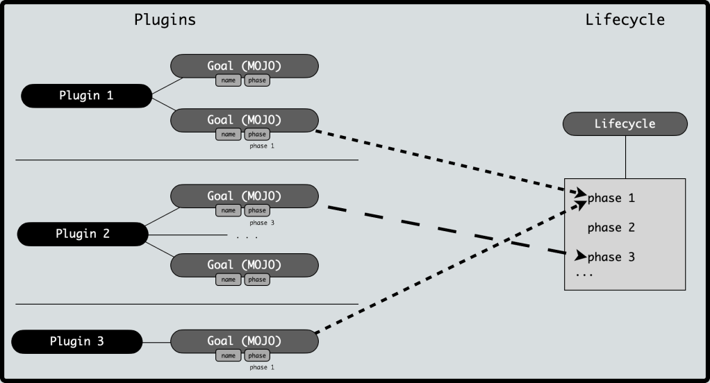
Maven 有以下三个标准的生命周期：
每个生命周期中都包含着一系列的阶段(phase)。这些 phase 就相当于 Maven 提供的统一的接口，然后这些 phase 的实现由 Maven 的插件来完成。
我们在输入 mvn 命令的时候 比如 mvn clean，clean 对应的就是 Clean 生命周期中的 clean 阶段。但是 clean 的具体操作是由 maven-clean-plugin 来实现的。
所以说 Maven 生命周期的每一个阶段的具体实现都是由 Maven 插件实现的。
Maven 实际上是一个依赖插件执行的框架，每个任务实际上是由插件完成。Maven 插件通常被用来：
插件通常提供了一个目标的集合，并且可以使用下面的语法执行：
<code>mvn [plugin-name]:[goal-name]</code>
例如，一个 Java 工程可以使用 maven-compiler-plugin 的 compile-goal 编译，使用以下命令：
<code>mvn compiler:compile</code>
与依赖类似，插件也通过 groupId、artifactId、version 唯一标识：
| 属性 | 说明 | 常见值 |
|---|---|---|
groupId | 插件组织 | org.apache.maven.plugins（官方插件） |
artifactId | 插件名称 | maven-compiler-plugin |
version | 插件版本 | 3.8.1 |
每个插件可以包含多个目标，例如：
maven-compiler-plugin：
compile：编译主代码
testCompile：编译测试代码
maven-surefire-plugin：
test：运行单元测试
Maven 已为生命周期阶段预绑定插件目标：
| 生命周期阶段 | 绑定的插件目标 |
|---|---|
compile | maven-compiler-plugin:compile |
test | maven-surefire-plugin:test |
package | maven-jar-plugin:jar（或 maven-war-plugin:war） |
在 pom.xml 中显式配置：
<build>
<plugins>
<plugin>
<groupId>org.apache.maven.plugins</groupId>
<artifactId>maven-compiler-plugin</artifactId>
<version>3.8.1</version>
<executions>
<execution>
<phase>compile</phase> <!-- 绑定到 compile 阶段 -->
<goals>
<goal>compile</goal>
</goals>
</execution>
</executions>
</plugin>
</plugins>
</build>
| 插件 | 作用 | 常用目标 |
|---|---|---|
maven-compiler-plugin | 编译 Java 代码 | compile, testCompile |
maven-resources-plugin | 处理资源文件 | resources, testResources |
配置示例：
<plugin>
<groupId>org.apache.maven.plugins</groupId>
<artifactId>maven-compiler-plugin</artifactId>
<version>3.8.1</version>
<configuration>
<source>11</source> <!-- Java 版本 -->
<target>11</target>
</configuration>
</plugin>
| 插件 | 作用 | 常用目标 |
|---|---|---|
maven-surefire-plugin | 运行单元测试 | test |
maven-failsafe-plugin | 运行集成测试 | integration-test |
跳过测试配置：
<plugin>
<groupId>org.apache.maven.plugins</groupId>
<artifactId>maven-surefire-plugin</artifactId>
<version>2.22.2</version>
<configuration>
<skipTests>true</skipTests> <!-- 跳过测试 -->
</configuration>
</plugin>
| 插件 | 作用 | 常用目标 |
|---|---|---|
maven-jar-plugin | 打包 JAR 文件 | jar |
maven-war-plugin | 打包 WAR 文件 | war |
maven-assembly-plugin | 自定义打包 | single |
可执行 JAR 配置：
<plugin>
<groupId>org.apache.maven.plugins</groupId>
<artifactId>maven-jar-plugin</artifactId>
<version>3.2.0</version>
<configuration>
<archive>
<manifest>
<mainClass>com.example.Main</mainClass> <!-- 指定主类 -->
</manifest>
</archive>
</configuration>
</plugin>| 插件 | 作用 | 常用目标 |
|---|---|---|
maven-install-plugin | 安装到本地仓库 | install |
maven-deploy-plugin | 部署到远程仓库 | deploy |
通过生命周期调用:
mvn compile # 触发 maven-compiler-plugin:compile
直接调用插件目标:
mvn compiler:compile # 直接调用编译目标
命令行参数配置:
mvn compiler:compile -Dmaven.compiler.source=11
通过 configuration 标签设置：
<plugin>
<groupId>org.apache.maven.plugins</groupId>
<artifactId>maven-surefire-plugin</artifactId>
<version>2.22.2</version>
<configuration>
<includes>
<include>**/*Test.java</include> <!-- 只包含特定测试 -->
</includes>
</configuration>
</plugin>多目标执行:
<executions>
<execution>
<id>run-tests</id>
<phase>test</phase>
<goals>
<goal>test</goal>
</goals>
</execution>
</executions>
插件目标对应的 Java 类称为 Mojo（Maven plain Old Java Object）。
必须继承 AbstractMojo 并实现 execute() 方法。
mvn clean install # 将插件安装到本地仓库
Maven 提供了下面两种类型的插件：
| 类型 | 描述 |
|---|---|
| Build plugins | 在构建时执行，并在 pom.xml 的 元素中配置。 |
| Reporting plugins | 在网站生成过程中执行，并在 pom.xml 的 元素中配置。 |
下面是一些常用插件的列表：
| 插件 | 描述 |
|---|---|
| clean | 构建之后清理目标文件。删除目标目录。 |
| compiler | 编译 Java 源文件。 |
| surefile | 运行 JUnit 单元测试。创建测试报告。 |
| jar | 从当前工程中构建 JAR 文件。 |
| war | 从当前工程中构建 WAR 文件。 |
| javadoc | 为工程生成 Javadoc。 |
| antrun | 从构建过程的任意一个阶段中运行一个 ant 任务的集合。 |
我们已经在我们的例子中大量使用了 maven-antrun-plugin 来输出数据到控制台上。请查看 Maven - 构建配置文件 章节。让我们用一种更好的方式理解这部分内容，在 C:\MVN\project 目录下创建一个 pom.xml 文件。
<project xmlns="http://maven.apache.org/POM/4.0.0" xmlns:xsi="http://www.w3.org/2001/XMLSchema-instance" xsi:schemaLocation="http://maven.apache.org/POM/4.0.0 http://maven.apache.org/xsd/maven-4.0.0.xsd"> <modelVersion>4.0.0</modelVersion> <groupId>com.companyname.projectgroup</groupId> <artifactId>project</artifactId> <version>1.0</version> <build> <plugins> <plugin> <groupId>org.apache.maven.plugins</groupId> <artifactId>maven-antrun-plugin</artifactId> <version>1.1</version> <executions> <execution> <id>id.clean</id> <phase>clean</phase> <goals> <goal>run</goal> </goals> <configuration> <tasks> <echo>clean phase</echo> </tasks> </configuration> </execution> </executions> </plugin> </plugins> </build> </project>接下来，打开命令终端跳转到 pom.xml 所在的目录，并执行下面的 mvn 命令。
mvn clean
Maven 将开始处理并显示 clean 生命周期的 clean 阶段。
[INFO] Scanning for projects...
[INFO] ------------------------------------------------------------------
[INFO] Building Unnamed - com.companyname.projectgroup:project:jar:1.0
[INFO] task-segment: [post-clean]
[INFO] ------------------------------------------------------------------
[INFO] [clean:clean {execution: default-clean}]
[INFO] [antrun:run {execution: id.clean}]
[INFO] Executing tasks
[echo] clean phase
[INFO] Executed tasks
[INFO] ------------------------------------------------------------------
[INFO] BUILD SUCCESSFUL
[INFO] ------------------------------------------------------------------
[INFO] Total time: < 1 second
[INFO] Finished at: Sat Jul 07 13:38:59 IST 2012
[INFO] Final Memory: 4M/44M
[INFO] ------------------------------------------------------------------
上面的例子展示了以下关键概念：
Maven 使用原型 archetype 插件创建项目。要创建一个简单的 Java 应用，我们将使用 maven-archetype-quickstart 插件。
在下面的例子中，我们将在 C:\MVN 文件夹下创建一个基于 maven 的 java 应用项目。
命令格式如下：
mvn archetype:generate "-DgroupId=com.companyname.bank" "-DartifactId=consumerBanking" "-DarchetypeArtifactId=maven-archetype-quickstart" "-DinteractiveMode=false"
参数说明：
生成的文件夹结构如下：
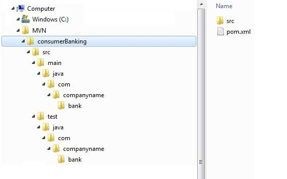
各个文件夹说明：
| 文件夹结构 | 描述 |
|---|---|
| consumerBanking | 包含 src 文件夹和 pom.xml |
| src/main/java contains | java 代码文件在包结构下（com/companyName/bank）。 |
| src/main/java test | 测试代码文件在包结构下（com/companyName/bank）。 |
| src/main/resources | 包含了 图片 / 属性 文件（在上面的例子中，我们需要手动创建这个结构）。 |
在 C:\MVN\consumerBanking\src\main\java\com\companyname\bank 文件夹中，可以看到一个 App.java，代码如下：
打开 C:\MVN\consumerBanking\src\test\java\com\companyname\bank 文件夹，可以看到 Java 测试文件 AppTest.java。
接下来的开发过程中我们只需要按照上面表格中提到的结构放置好，其他的事情 Maven 帮我们将会搞定。
在上一章节中我们学会了如何使用 Maven 创建 Java 应用。接下来我们要学习如何构建和测试这个项目。
进入 C:/MVN 文件夹下，打开 consumerBanking 文件夹。你将看到有一个 pom.xml 文件，代码如下：
<project xmlns="http://maven.apache.org/POM/4.0.0" xmlns:xsi="http://www.w3.org/2001/XMLSchema-instance" xsi:schemaLocation="http://maven.apache.org/POM/4.0.0 http://maven.apache.org/maven-v4_0_0.xsd"> <modelVersion>4.0.0</modelVersion> <groupId>com.companyname.bank</groupId> <artifactId>consumerBanking</artifactId> <packaging>jar</packaging> <version>1.0-SNAPSHOT</version> <name>consumerBanking</name> <url>http://maven.apache.org</url> <dependencies> <dependency> <groupId>junit</groupId> <artifactId>junit</artifactId> <version>3.8.1</version> <scope>test</scope> </dependency> </dependencies> </project>从以上 xml代码中，可知 Maven 已经添加了 JUnit 作为测试框架。
默认情况下 Maven 添加了一个源码文件 C:\MVN\consumerBanking\src\main\java\com\companyname\bank\App.java 和一个测试文件 C:\MVN\consumerBanking\src\test\java\com\companyname\bank\AppTest.java。
打开命令控制台，跳转到 C:\MVN\consumerBanking 目录下，并执行以下 mvn 命令开始构建项目：
C:\MVN\consumerBanking>mvn clean package
[INFO] Scanning for projects...
[INFO] -------------------------------------------------------------------
[INFO] Building consumerBanking
[INFO] task-segment: [clean, package]
[INFO] -------------------------------------------------------------------
[INFO] [clean:clean {execution: default-clean}]
[INFO] Deleting directory C:\MVN\consumerBanking\target
...
...
...
[INFO] [jar:jar {execution: default-jar}]
[INFO] Building jar: C:\MVN\consumerBanking\target\
consumerBanking-1.0-SNAPSHOT.jar
[INFO] ------------------------------------------------------------------------
[INFO] BUILD SUCCESSFUL
[INFO] ------------------------------------------------------------------------
[INFO] Total time: 2 seconds
[INFO] Finished at: Tue Jul 10 16:52:18 IST 2012
[INFO] Final Memory: 16M/89M
[INFO] ------------------------------------------------------------------------
执行完后，我们已经构建了自己的项目并创建了最终的 jar 文件，下面是要学习的关键概念：
C:\MVN\consumerBanking\target\classes>java com.companyname.bank.App
你可以看到结果：
Hello World!添加 Java 源文件
接下来我们看看如何添加其他的 Java 文件到项目中。打开 C:\MVN\consumerBanking\src\main\java\com\companyname\bank 文件夹，在其中创建 Util 类 Util.java。
更新 App 类来使用 Util 类:
现在打开命令控制台，跳转到 C:\MVN\consumerBanking 目录下，并执行下面的 mvn 命令。
C:\MVN\consumerBanking>mvn clean compile
在 Maven 构建成功之后，跳转到 C:\MVN\consumerBanking\target\classes 目录下，并执行下面的 java 命令。
C:\MVN\consumerBanking\target\classes>java -cp . com.companyname.bank.App
你可以看到结果：
Hello World!
如果我们需要引入第三方库文件到项目，该怎么操作呢？
pom.xml 的 dependencies 列表列出了我们的项目需要构建的所有外部依赖项。
要添加依赖项，我们一般是先在 src 文件夹下添加 lib 文件夹，然后将你工程需要的 jar 文件复制到 lib 文件夹下。我们使用的是 ldapjdk.jar ，它是为 LDAP 操作的一个帮助库：
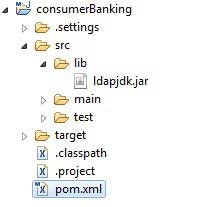
然后添加以下依赖到 pom.xml 文件中：
<dependencies> <!-- 在这里添加你的依赖 --> <dependency> <groupId>ldapjdk</groupId> <!-- 库名称，也可以自定义 --> <artifactId>ldapjdk</artifactId> <!--库名称，也可以自定义--> <version>1.0</version> <!--版本号--> <scope>system</scope> <!--作用域--> <systemPath>${basedir}\src\lib\ldapjdk.jar</systemPath> <!--项目根目录下的lib文件夹下--> </dependency> </dependencies>pom.xml 文件完整代码如下：
<project xmlns="http://maven.apache.org/POM/4.0.0" xmlns:xsi="http://www.w3.org/2001/XMLSchema-instance" xsi:schemaLocation="http://maven.apache.org/POM/4.0.0 http://maven.apache.org/maven-v4_0_0.xsd"> <modelVersion>4.0.0</modelVersion> <groupId>com.companyname.bank</groupId> <artifactId>consumerBanking</artifactId> <packaging>jar</packaging> <version>1.0-SNAPSHOT</version> <name>consumerBanking</name> <url>http://maven.apache.org</url> <dependencies> <dependency> <groupId>junit</groupId> <artifactId>junit</artifactId> <version>3.8.1</version> <scope>test</scope> </dependency> <dependency> <groupId>ldapjdk</groupId> <artifactId>ldapjdk</artifactId> <scope>system</scope> <version>1.0</version> <systemPath>${basedir}\src\lib\ldapjdk.jar</systemPath> </dependency> </dependencies> </project>Maven 使用 archetype(原型) 来创建自定义的项目结构，形成 Maven 项目模板。
在前面章节我们学到 Maven 使用下面的命令来快速创建 java 项目：
mvn archetype:generate
archetype 也就是原型，是一个 Maven 插件，准确说是一个项目模板，它的任务是根据模板创建一个项目结构。我们将使用 quickstart 原型插件创建一个简单的 java 应用程序。
让我们打开命令控制台，跳转到 C:\> MVN 目录并执行以下 mvn 命令:
C:\MVN> mvn archetype:generate
Maven 将开始处理，并要求选择所需的原型:
[INFO] Scanning for projects... [INFO] Searching repository for plugin with prefix: 'archetype'. [INFO] ------------------------------------------------------------------- [INFO] Building Maven Default Project [INFO]task-segment: [archetype:generate] (aggregator-style) [INFO] ------------------------------------------------------------------- [INFO] Preparing archetype:generate ... 600: remote -> org.trailsframework:trails-archetype (-) 601: remote -> org.trailsframework:trails-secure-archetype (-) 602: remote -> org.tynamo:tynamo-archetype (-) 603: remote -> org.wicketstuff.scala:wicket-scala-archetype (-) 604: remote -> org.wicketstuff.scala:wicketstuff-scala-archetype Basic setup for a project that combines Scala and Wicket, depending on the Wicket-Scala project. Includes an example Specs test.) 605: remote -> org.wikbook:wikbook.archetype (-) 606: remote -> org.xaloon.archetype:xaloon-archetype-wicket-jpa-glassfish (-) 607: remote -> org.xaloon.archetype:xaloon-archetype-wicket-jpa-spring (-) 608: remote -> org.xwiki.commons:xwiki-commons-component-archetype (Make it easy to create a maven project for creating XWiki Components.) 609: remote -> org.xwiki.rendering:xwiki-rendering-archetype-macro (Make it easy to create a maven project for creating XWiki Rendering Macros.) 610: remote -> org.zkoss:zk-archetype-component (The ZK Component archetype) 611: remote -> org.zkoss:zk-archetype-webapp (The ZK wepapp archetype) 612: remote -> ru.circumflex:circumflex-archetype (-) 613: remote -> se.vgregion.javg.maven.archetypes:javg-minimal-archetype (-) 614: remote -> sk.seges.sesam:sesam-annotation-archetype (-) Choose a number or apply filter (format: [groupId:]artifactId, case sensitive contains): 203:
按下 Enter 选择默认选项 (203:maven-archetype-quickstart)。
Choose org.apache.maven.archetypes:maven-archetype-quickstart version: 1: 1.0-alpha-1 2: 1.0-alpha-2 3: 1.0-alpha-3 4: 1.0-alpha-4 5: 1.0 6: 1.1 Choose a number: 6:
按下 Enter 选择默认选项 (6:maven-archetype-quickstart:1.1)
Maven 将询问项目细节。按要求输入项目细节。如果要使用默认值则直接按 Enter 键。你也可以输入自己的值。
Define value for property 'groupId': : com.companyname.insurance Define value for property 'artifactId': : health Define value for property 'version': 1.0-SNAPSHOT Define value for property 'package': com.companyname.insurance
Maven 将要求确认项目细节，按 Enter 或按 Y
Confirm properties configuration: groupId: com.companyname.insurance artifactId: health version: 1.0-SNAPSHOT package: com.companyname.insurance Y:
现在 Maven 将开始创建项目结构，显示如下:
[INFO] ----------------------------------------------------------------------- [INFO] Using following parameters for creating project from Old (1.x) Archetype: maven-archetype-quickstart:1.1 [INFO] ----------------------------------------------------------------------- [INFO] Parameter: groupId, Value: com.companyname.insurance [INFO] Parameter: packageName, Value: com.companyname.insurance [INFO] Parameter: package, Value: com.companyname.insurance [INFO] Parameter: artifactId, Value: health [INFO] Parameter: basedir, Value: C:\MVN [INFO] Parameter: version, Value: 1.0-SNAPSHOT [INFO] project created from Old (1.x) Archetype in dir: C:\MVN\health [INFO] ----------------------------------------------------------------------- [INFO] BUILD SUCCESSFUL [INFO] ----------------------------------------------------------------------- [INFO] Total time: 4 minutes 12 seconds [INFO] Finished at: Fri Jul 13 11:10:12 IST 2012 [INFO] Final Memory: 20M/90M [INFO] -----------------------------------------------------------------------
现在转到 C:\ > MVN 目录。你会看到一个名为 health 的 java 应用程序项目，就像在项目创建的时候建立的 artifactId 名称一样。 Maven 将创建一个有标准目录布局的项目，如下所示:
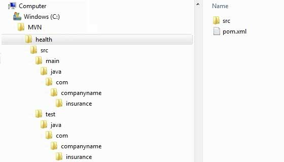
Maven 为项目自动生成一个 pom.xml文件，如下所示:
<project xmlns="http://maven.apache.org/POM/4.0.0" xmlns:xsi="http://www.w3.org/2001/XMLSchema-instance" xsi:schemaLocation="http://maven.apache.org/POM/4.0.0 http://maven.apache.org/xsd/maven-4.0.0.xsd"> <modelVersion>4.0.0</modelVersion> <groupId>com.companyname.insurance</groupId> <artifactId>health</artifactId> <version>1.0-SNAPSHOT</version> <packaging>jar</packaging> <name>health</name> <url>http://maven.apache.org</url> <properties> <project.build.sourceEncoding>UTF-8</project.build.sourceEncoding> </properties> <dependencies> <dependency> <groupId>junit</groupId> <artifactId>junit</artifactId> <version>3.8.1</version> <scope>test</scope> </dependency> </dependencies> </project>Maven 会自动生成一个测试的 java 文件 App.java。
路径：C:\MVN\consumerBanking\src\main\java\com\companyname\bank
package com.companyname.insurance; /** * Hello world! * */ public class App { public static void main( String[] args ) { System.out.println( "Hello World!" ); } }Maven 会自动生成一个 java 文件 AppTest.java。
路径为： C:\MVN\consumerBanking\src\test\java\com\companyname\bank
package com.companyname.insurance; import junit.framework.Test; import junit.framework.TestCase; import junit.framework.TestSuite; /** * Unit test for simple App. */ public class AppTest extends TestCase { /** * Create the test case * * @param testName name of the test case */ public AppTest( String testName ) { super( testName ); } /** * @return the suite of tests being tested */ public static Test suite() { return new TestSuite( AppTest.class ); } /** * Rigourous Test :-) */ public void testApp() { assertTrue( true ); } }就这样。现在你可以看到 Maven 的强大之处。你可以用 maven 简单的命令创建任何类型的项目，并且可以启动您的开发。
本章节我们主要学习如何创建 Maven 项目文档。
比如我们在 C:/MVN 目录下，创建了 consumerBanking 项目，Maven 使用下面的命令来快速创建 java 项目：
mvn archetype:generate -DgroupId=com.companyname.bank -DartifactId=consumerBanking -DarchetypeArtifactId=maven-archetype-quickstart -DinteractiveMode=false
修改 pom.xml，添加以下配置（如果没有的话）：
<project> ... <build> <pluginManagement> <plugins> <plugin> <groupId>org.apache.maven.plugins</groupId> <artifactId>maven-site-plugin</artifactId> <version>3.3</version> </plugin> <plugin> <groupId>org.apache.maven.plugins</groupId> <artifactId>maven-project-info-reports-plugin</artifactId> <version>2.7</version> </plugin> </plugins> </pluginManagement> </build> ... </project>不然运行 mvn site 命令时出现 java.lang.NoClassDefFoundError: org/apache/maven/doxia/siterenderer/DocumentContent 的问题， 这是由于 maven-site-plugin 版本过低，升级到 3.3+ 即可。
打开 consumerBanking 文件夹并执行以下 mvn 命令。
C:\MVN\consumerBanking> mvn site
Maven 开始生成文档：
[INFO] Scanning for projects...
[INFO] -------------------------------------------------------------------
[INFO] Building consumerBanking
[INFO]task-segment: [site]
[INFO] -------------------------------------------------------------------
[INFO] [site:site {execution: default-site}]
[INFO] artifact org.apache.maven.skins:maven-default-skin:
checking for updates from central
[INFO] Generating "About" report.
[INFO] Generating "Issue Tracking" report.
[INFO] Generating "Project Team" report.
[INFO] Generating "Dependencies" report.
[INFO] Generating "Continuous Integration" report.
[INFO] Generating "Source Repository" report.
[INFO] Generating "Project License" report.
[INFO] Generating "Mailing Lists" report.
[INFO] Generating "Plugin Management" report.
[INFO] Generating "Project Summary" report.
[INFO] -------------------------------------------------------------------
[INFO] BUILD SUCCESSFUL
[INFO] -------------------------------------------------------------------
[INFO] Total time: 16 seconds
[INFO] Finished at: Wed Jul 11 18:11:18 IST 2012
[INFO] Final Memory: 23M/148M
[INFO] -------------------------------------------------------------------
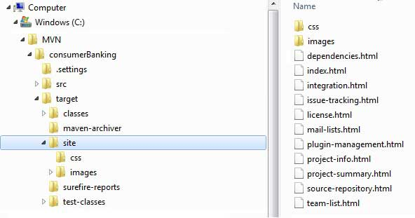
打开 C:\MVN\consumerBanking\target\site 文件夹。点击 index.html 就可以看到文档了。
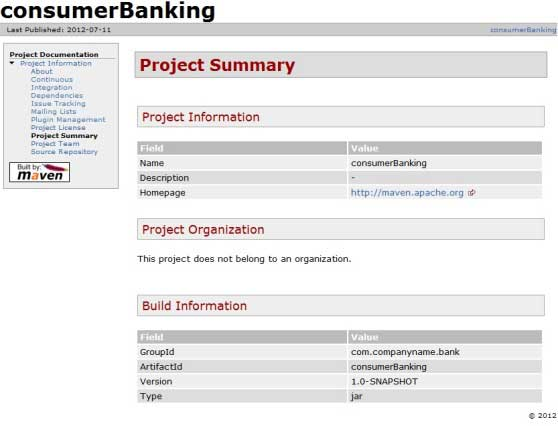
Maven 使用一个名为 Doxia的文档处理引擎来创建文档，它能将多种格式的源码读取成一种通用的文档模型。要为你的项目撰写文档，你可以将内容写成下面几种常用的，可被 Doxia 转化的格式。
| 格式名 | 描述 | 参考 |
|---|---|---|
| Apt | 纯文本文档格式 | http://maven.apache.org/doxia/references/apt-format.html |
| Xdoc | Maven 1.x 的一种文档格式 | http://jakarta.apache.org/site/jakarta-site2.html |
| FML | FAQ 文档适用 | http://maven.apache.org/doxia/references/fml-format.html |
| XHTML | 可扩展的 HTML 文档 | http://en.wikipedia.org/wiki/XHTML |
一个大型的软件应用通常包含多个模块，并且通常的场景是多个团队开发同一应用的不同模块。举个例子，设想一个团队开发应用的前端，项目为 app-ui(app-ui.jar:1.0)，而另一个团队开发应用的后台，使用的项目是 data-service(data-service.jar:1.0)。
现在可能出现的情况是开发 data-service 的团队正在进行快节奏的 bug 修复或者项目改进，并且他们几乎每隔一天就要发布库到远程仓库。 现在如果 data-service 团队每隔一天上传一个新版本，那么将会出现下面的问题：
为了解决这种情况，快照的概念派上了用场。
快照是一种特殊的版本，指定了某个当前的开发进度的副本。不同于常规的版本，Maven 每次构建都会在远程仓库中检查新的快照。 现在 data-service 团队会每次发布更新代码的快照到仓库中，比如说 data-service:1.0-SNAPSHOT 来替代旧的快照 jar 包。
对于版本，如果 Maven 以前下载过指定的版本文件，比如说 data-service:1.0，Maven 将不会再从仓库下载新的可用的 1.0 文件。若要下载更新的代码，data-service 的版本需要升到1.1。
快照的情况下，每次 app-ui 团队构建他们的项目时，Maven 将自动获取最新的快照(data-service:1.0-SNAPSHOT)。
app-ui 项目使用的是 data-service 项目的 1.0 快照。
<project xmlns="http://maven.apache.org/POM/4.0.0" xmlns:xsi="http://www.w3.org/2001/XMLSchema-instance" xsi:schemaLocation="http://maven.apache.org/POM/4.0.0 http://maven.apache.org/xsd/maven-4.0.0.xsd"> <modelVersion>4.0.0</modelVersion> <groupId>app-ui</groupId> <artifactId>app-ui</artifactId> <version>1.0</version> <packaging>jar</packaging> <name>health</name> <url>http://maven.apache.org</url> <properties> <project.build.sourceEncoding>UTF-8</project.build.sourceEncoding> </properties> <dependencies> <dependency> <groupId>data-service</groupId> <artifactId>data-service</artifactId> <version>1.0-SNAPSHOT</version> <scope>test</scope> </dependency> </dependencies> </project>data-service 项目为每次小的改动发布 1.0 快照。
<project xmlns="http://maven.apache.org/POM/4.0.0" xmlns:xsi="http://www.w3.org/2001/XMLSchema-instance" xsi:schemaLocation="http://maven.apache.org/POM/4.0.0 http://maven.apache.org/xsd/maven-4.0.0.xsd"> <modelVersion>4.0.0</modelVersion> <groupId>data-service</groupId> <artifactId>data-service</artifactId> <version>1.0-SNAPSHOT</version> <packaging>jar</packaging> <name>health</name> <url>http://maven.apache.org</url> <properties> <project.build.sourceEncoding>UTF-8</project.build.sourceEncoding> </properties> </project>虽然，快照的情况下，Maven 在日常工作中会自动获取最新的快照， 你也可以在任何 maven 命令中使用 -U 参数强制 maven 下载最新的快照构建。
mvn clean package -U
让我们打开命令控制台，去到 C:\ > MVN > app-ui 目录，然后执行下面的 mvn 命令。
C:\MVN\app-ui>mvn clean package -U
Maven 将在下载 data-service 最新的快照之后，开始构建项目。
[INFO] Scanning for projects...
[INFO] -------------------------------------------------------------------
[INFO] Building consumerBanking
[INFO] task-segment: [clean, package]
[INFO] -------------------------------------------------------------------
[INFO] Downloading data-service:1.0-SNAPSHOT
[INFO] 290K downloaded.
[INFO] [clean:clean {execution: default-clean}]
[INFO] Deleting directory C:\MVN\app-ui\target
[INFO] [resources:resources {execution: default-resources}]
[WARNING] Using platform encoding (Cp1252 actually) to copy filtered resources,
i.e. build is platform dependent!
[INFO] skip non existing resourceDirectory C:\MVN\app-ui\src\main\
resources
[INFO] [compiler:compile {execution: default-compile}]
[INFO] Compiling 1 source file to C:\MVN\app-ui\target\classes
[INFO] [resources:testResources {execution: default-testResources}]
[WARNING] Using platform encoding (Cp1252 actually) to copy filtered resources,
i.e. build is platform dependent!
[INFO] skip non existing resourceDirectory C:\MVN\app-ui\src\test\
resources
[INFO] [compiler:testCompile {execution: default-testCompile}]
[INFO] Compiling 1 source file to C:\MVN\app-ui\target\test-classes
[INFO] [surefire:test {execution: default-test}]
[INFO] Surefire report directory: C:\MVN\app-ui\target\
surefire-reports
-------------------------------------------------------
T E S T S
-------------------------------------------------------
Running com.companyname.bank.AppTest
Tests run: 1, Failures: 0, Errors: 0, Skipped: 0, Time elapsed: 0.027 sec
Results :
Tests run: 1, Failures: 0, Errors: 0, Skipped: 0
[INFO] [jar:jar {execution: default-jar}]
[INFO] Building jar: C:\MVN\app-ui\target\
app-ui-1.0-SNAPSHOT.jar
[INFO] ------------------------------------------------------------------------
[INFO] BUILD SUCCESSFUL
[INFO] ------------------------------------------------------------------------
[INFO] Total time: 2 seconds
[INFO] Finished at: Tue Jul 10 16:52:18 IST 2012
[INFO] Final Memory: 16M/89M
[INFO] ------------------------------------------------------------------------自动化构建定义了这样一种场景: 在一个项目成功构建完成后，其相关的依赖工程即开始构建，这样可以保证其依赖项目的稳定。
比如一个团队正在开发一个项目 bus-core-api， 并且有其他两个项目 app-web-ui 和 app-desktop-ui 依赖于这个项目。
app-web-ui 项目使用的是 bus-core-api 项目的 1.0 快照：
<project xmlns="http://maven.apache.org/POM/4.0.0" xmlns:xsi="http://www.w3.org/2001/XMLSchema-instance" xsi:schemaLocation="http://maven.apache.org/POM/4.0.0 http://maven.apache.org/xsd/maven-4.0.0.xsd"> <modelVersion>4.0.0</modelVersion> <groupId>app-web-ui</groupId> <artifactId>app-web-ui</artifactId> <version>1.0</version> <packaging>jar</packaging> <dependencies> <dependency> <groupId>bus-core-api</groupId> <artifactId>bus-core-api</artifactId> <version>1.0-SNAPSHOT</version> </dependency> </dependencies> </project>app-desktop-ui 项目使用的是 bus-core-api 项目的 1.0 快照：
<project xmlns="http://maven.apache.org/POM/4.0.0" xmlns:xsi="http://www.w3.org/2001/XMLSchema-instance" xsi:schemaLocation="http://maven.apache.org/POM/4.0.0 http://maven.apache.org/xsd/maven-4.0.0.xsd"> <modelVersion>4.0.0</modelVersion> <groupId>app-desktop-ui</groupId> <artifactId>app-desktop-ui</artifactId> <version>1.0</version> <packaging>jar</packaging> <dependencies> <dependency> <groupId>bus-core-api</groupId> <artifactId>bus-core-api</artifactId> <version>1.0-SNAPSHOT</version> </dependency> </dependencies> </project>bus-core-api 项目：
<project xmlns="http://maven.apache.org/POM/4.0.0" xmlns:xsi="http://www.w3.org/2001/XMLSchema-instance" xsi:schemaLocation="http://maven.apache.org/POM/4.0.0 http://maven.apache.org/xsd/maven-4.0.0.xsd"> <modelVersion>4.0.0</modelVersion> <groupId>bus-core-api</groupId> <artifactId>bus-core-api</artifactId> <version>1.0-SNAPSHOT</version> <packaging>jar</packaging> </project>现在 app-web-ui 和 app-desktop-ui 项目的团队要求不管 bus-core-api 项目何时变化，他们的构建过程都应当可以启动。
使用快照可以确保最新的 bus-core-api 项目被使用，但要达到上面的要求，我们还需要做一些额外的工作。
可以使用两种方式：
修改 bus-core-api 项目的 pom.xml 文件。
<project xmlns="http://maven.apache.org/POM/4.0.0" xmlns:xsi="http://www.w3.org/2001/XMLSchema-instance" xsi:schemaLocation="http://maven.apache.org/POM/4.0.0 http://maven.apache.org/xsd/maven-4.0.0.xsd"> <modelVersion>4.0.0</modelVersion> <groupId>bus-core-api</groupId> <artifactId>bus-core-api</artifactId> <version>1.0-SNAPSHOT</version> <packaging>jar</packaging> <build> <plugins> <plugin> <artifactId>maven-invoker-plugin</artifactId> <version>1.6</version> <configuration> <debug>true</debug> <pomIncludes> <pomInclude>app-web-ui/pom.xml</pomInclude> <pomInclude>app-desktop-ui/pom.xml</pomInclude> </pomIncludes> </configuration> <executions> <execution> <id>build</id> <goals> <goal>run</goal> </goals> </execution> </executions> </plugin> </plugins> </build> </project>打开命令控制台，切换到 C:\ > MVN > bus-core-api 目录下，然后执行以下命令。
C:\MVN\bus-core-api>mvn clean package -U
执行完命令后，Maven 将开始构建项目 bus-core-api。
[INFO] Scanning for projects...
[INFO] ------------------------------------------------------------------
[INFO] Building bus-core-api
[INFO] task-segment: [clean, package]
[INFO] ------------------------------------------------------------------
...
[INFO] [jar:jar {execution: default-jar}]
[INFO] Building jar: C:\MVN\bus-core-ui\target\
bus-core-ui-1.0-SNAPSHOT.jar
[INFO] ------------------------------------------------------------------
[INFO] BUILD SUCCESSFUL
[INFO] ------------------------------------------------------------------
bus-core-api 构建成功后，Maven 将开始构建 app-web-ui 项目。
[INFO] ------------------------------------------------------------------
[INFO] Building app-web-ui
[INFO] task-segment: [package]
[INFO] ------------------------------------------------------------------
...
[INFO] [jar:jar {execution: default-jar}]
[INFO] Building jar: C:\MVN\app-web-ui\target\
app-web-ui-1.0-SNAPSHOT.jar
[INFO] ------------------------------------------------------------------
[INFO] BUILD SUCCESSFUL
[INFO] ------------------------------------------------------------------
app-web-ui 构建成功后，Maven 将开始构建 app-desktop-ui 项目。
[INFO] ------------------------------------------------------------------
[INFO] Building app-desktop-ui
[INFO] task-segment: [package]
[INFO] ------------------------------------------------------------------
...
[INFO] [jar:jar {execution: default-jar}]
[INFO] Building jar: C:\MVN\app-desktop-ui\target\
app-desktop-ui-1.0-SNAPSHOT.jar
[INFO] -------------------------------------------------------------------
[INFO] BUILD SUCCESSFUL
[INFO] -------------------------------------------------------------------
如果使用 CI 服务器更，我们每次的一个新项目，比如说实例中的 app-mobile-ui，添加为依赖 bus-core-api 项目时，开发者就不需要更新 bus-core-api 项目的 pom。Hudson 将会借助 Maven 的依赖管理功能实现工程的自动化创建。
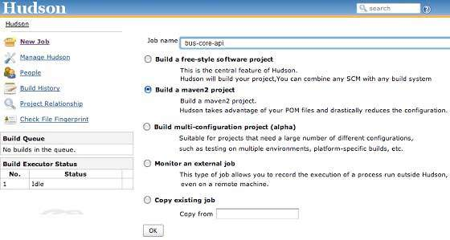
Hudson 把每个项目构建当成一次任务。在一个项目的代码提交到 SVN （或者任何映射到 Hudson 的代码管理工具）后，Hudson 将开始项目的构建任务，并且一旦此构建任务完成，Hudson 将自动启动其他依赖的构建任务（其他依赖项目的构建）。
在上面的例子中，当 bus-core-ui 源代码在 SVN 更新后，Hudson 开始项目构建。一旦构建成功，Hudson 自动地查找依赖的项目，然后开始构建 app-web-ui 和 app-desktop-ui 项目。
Maven 一个核心的特性就是依赖管理。当我们处理多模块的项目（包含成百上千个模块或者子项目），模块间的依赖关系就变得非常复杂，管理也变得很困难。针对此种情形，Maven 提供了一种高度控制的方法。
一种相当常见的情况，比如说 A 依赖于其他库 B。如果，另外一个项目 C 想要使用 A ，那么 C 项目也需要使用库 B。
Maven 可以避免去搜索所有所需库的需求。Maven 通过读取项目文件（pom.xml），找出它们项目之间的依赖关系。
我们需要做的只是在每个项目的 pom 中定义好直接的依赖关系。其他的事情 Maven 会帮我们搞定。
通过可传递性的依赖，所有被包含的库的图形会快速的增长。当有重复库时，可能出现的情形将会持续上升。Maven 提供一些功能来控制可传递的依赖的程度。
| 功能 | 功能描述 |
|---|---|
| 依赖调节 | 决定当多个手动创建的版本同时出现时，哪个依赖版本将会被使用。 如果两个依赖版本在依赖树里的深度是一样的时候，第一个被声明的依赖将会被使用。 |
| 依赖管理 | 可以直接指定手动创建的某个版本供使用。例如，假设项目 C 包含了项目 B 作为其依赖项，而项目 B 又依赖于项目 A。在这种情况下，可以明确指定在项目 B 被引用时使用的项目 A 的版本。这意味着您可以控制项目 A 的哪个特定版本会被项目 B 使用。 |
| 依赖范围 | 包含在构建过程每个阶段的依赖。 |
| 依赖排除 | 任何可传递的依赖都可以通过 "exclusion" 元素被排除在外。举例说明，A 依赖 B， B 依赖 C，因此 A 可以标记 C 为 "被排除的"。 |
| 依赖可选 | 任何可传递的依赖可以被标记为可选的，通过使用 "optional" 元素。例如：A 依赖 B， B 依赖 C。因此，B 可以标记 C 为可选的， 这样 A 就可以不再使用 C。 |
传递依赖发现可以通过使用如下的依赖范围来得到限制：
| 范围 | 描述 |
|---|---|
| 编译阶段 | 该范围表明相关依赖是只在项目的类路径下有效。默认取值。 |
| 供应阶段 | 该范围表明相关依赖是由运行时的 JDK 或者 网络服务器提供的。 |
| 运行阶段 | 该范围表明相关依赖在编译阶段不是必须的，但是在执行阶段是必须的。 |
| 测试阶段 | 该范围表明相关依赖只在测试编译阶段和执行阶段。 |
| 系统阶段 | 该范围表明你需要提供一个系统路径。 |
| 导入阶段 | 该范围只在依赖是一个 pom 里定义的依赖时使用。同时，当前项目的POM 文件的 部分定义的依赖关系可以取代某特定的 POM。 |
通常情况下，在一个共通的项目下，有一系列的项目。在这种情况下，我们可以创建一个公共依赖的 pom 文件，该 pom 包含所有的公共的依赖关系，我们称其为其他子项目 pom 的 pom 父。 接下来的一个例子可以帮助你更好的理解这个概念。
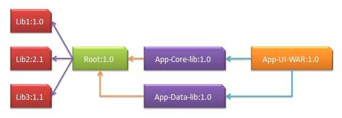
接下来是上面依赖图的详情说明：
App-UI-WAR 依赖于 App-Core-lib 和 App-Data-lib。
Root 是 App-Core-lib 和 App-Data-lib 的父项目。
Root 在它的依赖部分定义了 Lib1、lib2 和 Lib3 作为依赖。
App-UI-WAR 的 pom.xml 文件代码如下：
<project xmlns="http://maven.apache.org/POM/4.0.0" xmlns:xsi="http://www.w3.org/2001/XMLSchema-instance" xsi:schemaLocation="http://maven.apache.org/POM/4.0.0 http://maven.apache.org/xsd/maven-4.0.0.xsd"> <modelVersion>4.0.0</modelVersion> <groupId>com.companyname.groupname</groupId> <artifactId>App-UI-WAR</artifactId> <version>1.0</version> <packaging>war</packaging> <dependencies> <dependency> <groupId>com.companyname.groupname</groupId> <artifactId>App-Core-lib</artifactId> <version>1.0</version> </dependency> </dependencies> <dependencies> <dependency> <groupId>com.companyname.groupname</groupId> <artifactId>App-Data-lib</artifactId> <version>1.0</version> </dependency> </dependencies> </project>App-Core-lib 的 pom.xml 文件代码如下：
<project xmlns="http://maven.apache.org/POM/4.0.0" xmlns:xsi="http://www.w3.org/2001/XMLSchema-instance" xsi:schemaLocation="http://maven.apache.org/POM/4.0.0 http://maven.apache.org/xsd/maven-4.0.0.xsd"> <parent> <artifactId>Root</artifactId> <groupId>com.companyname.groupname</groupId> <version>1.0</version> </parent> <modelVersion>4.0.0</modelVersion> <groupId>com.companyname.groupname</groupId> <artifactId>App-Core-lib</artifactId> <version>1.0</version> <packaging>jar</packaging> </project>App-Data-lib 的 pom.xml 文件代码如下：
<project xmlns="http://maven.apache.org/POM/4.0.0" xmlns:xsi="http://www.w3.org/2001/XMLSchema-instance" xsi:schemaLocation="http://maven.apache.org/POM/4.0.0 http://maven.apache.org/xsd/maven-4.0.0.xsd"> <parent> <artifactId>Root</artifactId> <groupId>com.companyname.groupname</groupId> <version>1.0</version> </parent> <modelVersion>4.0.0</modelVersion> <groupId>com.companyname.groupname</groupId> <artifactId>App-Data-lib</artifactId> <version>1.0</version> <packaging>jar</packaging> </project>Root 的 pom.xml 文件代码如下：
<project xmlns="http://maven.apache.org/POM/4.0.0" xmlns:xsi="http://www.w3.org/2001/XMLSchema-instance" xsi:schemaLocation="http://maven.apache.org/POM/4.0.0 http://maven.apache.org/xsd/maven-4.0.0.xsd"> <modelVersion>4.0.0</modelVersion> <groupId>com.companyname.groupname</groupId> <artifactId>Root</artifactId> <version>1.0</version> <packaging>pom</packaging> <dependencies> <dependency> <groupId>com.companyname.groupname1</groupId> <artifactId>Lib1</artifactId> <version>1.0</version> </dependency> </dependencies> <dependencies> <dependency> <groupId>com.companyname.groupname2</groupId> <artifactId>Lib2</artifactId> <version>2.1</version> </dependency> </dependencies> <dependencies> <dependency> <groupId>com.companyname.groupname3</groupId> <artifactId>Lib3</artifactId> <version>1.1</version> </dependency> </dependencies> </project>现在当我们构建 App-UI-WAR 项目时， Maven 将通过遍历依赖关系图找到所有的依赖关系，并且构建该应用程序。
通过上面的例子，我们可以学习到以下关键概念：
项目开发过程中，部署的过程包含需如下步骤：
通常情况下上面的提到开发过程中会涉及到多个团队。一个团队可能负责提交代码，另一个团队负责构建等等。很有可能由于涉及的人为操作和多团队环境的原因，任何一个步骤都可能出错。比如，较旧的版本没有在网络机器上更新，然后部署团队又重新部署了较早的构建版本。
通过结合以下方案来实现自动化部署：
我们将会使用 Maven 发布的插件来创建一个自动化发布过程。
例如，bus-core-api 项目的 pom.xml 文件代码如下：
<project xmlns="http://maven.apache.org/POM/4.0.0" xmlns:xsi="http://www.w3.org/2001/XMLSchema-instance" xsi:schemaLocation="http://maven.apache.org/POM/4.0.0 http://maven.apache.org/xsd/maven-4.0.0.xsd"> <modelVersion>4.0.0</modelVersion> <groupId>bus-core-api</groupId> <artifactId>bus-core-api</artifactId> <version>1.0-SNAPSHOT</version> <packaging>jar</packaging> <scm> <url>http://www.svn.com</url> <connection>scm:svn:http://localhost:8080/svn/jrepo/trunk/ Framework</connection> <developerConnection>scm:svn:${username}/${password}@localhost:8080: common_core_api:1101:code</developerConnection> </scm> <distributionManagement> <repository> <id>Core-API-Java-Release</id> <name>Release repository</name> <url>http://localhost:8081/nexus/content/repositories/ Core-Api-Release</url> </repository> </distributionManagement> <build> <plugins> <plugin> <groupId>org.apache.maven.plugins</groupId> <artifactId>maven-release-plugin</artifactId> <version>2.0-beta-9</version> <configuration> <useReleaseProfile>false</useReleaseProfile> <goals>deploy</goals> <scmCommentPrefix>[bus-core-api-release-checkin]-< /scmCommentPrefix> </configuration> </plugin> </plugins> </build> </project>在 pom.xml 文件中，我们常用到的一些重要元素节点如下表所示：
| 元素节点 | 描述 |
|---|---|
| SCM | 配置 SVN 的路径，Maven 将从该路径下将代码取下来。 |
| repository | 构建的 WAR 或 EAR 或JAR 文件的位置，或者其他源码构建成功后生成的构件的存储位置。 |
| Plugin | 配置 maven-release-plugin 插件来实现自动部署过程。 |
Maven 使用 maven-release-plugin 插件来完成以下任务。
mvn release:clean
清理工作空间，保证最新的发布进程成功进行。
mvn release:rollback
在上次发布过程不成功的情况下，回滚修改的工作空间代码和配置保证发布过程成功进行。
mvn release:prepare
执行多种操作：
mvn release:perform
将代码切换到之前做标记的地方，运行 Maven 部署目标来部署 WAR 文件或者构建相应的结构到仓库里。
打开命令终端，进入到 C:\ > MVN >bus-core-api 目录下，然后执行如下的 mvn 命令。
C:\MVN\bus-core-api>mvn release:prepare
Maven 开始构建整个工程。构建成功后即可运行如下 mvn 命令。
C:\MVN\bus-core-api>mvn release:perform
构建成功后，你就可以可以验证在你仓库下上传的 JAR 文件是否生效。
本章节我们将学习如何使用版本控制系统 Maven 来管理一个基于 web 的项目，如何创建、构建、部署以及运行一个 web 应用。
我们可以使用 maven-archetype-webapp 插件来创建一个简单的 Java web 应用。
打开命令控制台，进入到 C:\MVN 文件夹，然后执行以下的 mvn 命令：
C:\MVN>mvn archetype:generate -DgroupId=com.companyname.automobile -DartifactId=trucks -DarchetypeArtifactId=maven-archetype-webapp -DinteractiveMode=false
执行完后 Maven 将开始处理，并且创建完整的于Java Web 项目的目录结构。
[INFO] Scanning for projects...
[INFO] Searching repository for plugin with prefix: 'archetype'.
[INFO] -------------------------------------------------------------------
[INFO] Building Maven Default Project
[INFO] task-segment: [archetype:generate] (aggregator-style)
[INFO] -------------------------------------------------------------------
[INFO] Preparing archetype:generate
[INFO] No goals needed for project - skipping
[INFO] [archetype:generate {execution: default-cli}]
[INFO] Generating project in Batch mode
[INFO] --------------------------------------------------------------------
[INFO] Using following parameters for creating project
from Old (1.x) Archetype: maven-archetype-webapp:1.0
[INFO] --------------------------------------------------------------------
[INFO] Parameter: groupId, Value: com.companyname.automobile
[INFO] Parameter: packageName, Value: com.companyname.automobile
[INFO] Parameter: package, Value: com.companyname.automobile
[INFO] Parameter: artifactId, Value: trucks
[INFO] Parameter: basedir, Value: C:\MVN
[INFO] Parameter: version, Value: 1.0-SNAPSHOT
[INFO] project created from Old (1.x) Archetype in dir: C:\MVN\trucks
[INFO] -------------------------------------------------------------------
[INFO] BUILD SUCCESSFUL
[INFO] -------------------------------------------------------------------
[INFO] Total time: 16 seconds
[INFO] Finished at: Tue Jul 17 11:00:00 IST 2012
[INFO] Final Memory: 20M/89M
[INFO] -------------------------------------------------------------------
执行完后，我们可以在 C:/MVN 文件夹下看到 trucks 项目，查看项目的目录结构：
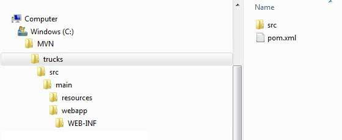
Maven 目录结构是标准的，各个目录作用如下表所示:
| 文件夹结构 | 描述 |
|---|---|
| trucks | 包含 src 文件夹和 pom.xml 文件。 |
| src/main/webapp | 包含 index.jsp 文件和 WEB-INF 文件夹. |
| src/main/webapp/WEB-INF | 包含 web.xml 文件 |
| src/main/resources | 包含图片、properties资源文件。 |
pom.xml 文件代码如下：
<project xmlns="http://maven.apache.org/POM/4.0.0" xmlns:xsi="http://www.w3.org/2001/XMLSchema-instance" xsi:schemaLocation="http://maven.apache.org/POM/4.0.0 http://maven.apache.org/maven-v4_0_0.xsd"> <modelVersion>4.0.0</modelVersion> <groupId>com.companyname.automobile</groupId> <artifactId>trucks</artifactId> <packaging>war</packaging> <version>1.0-SNAPSHOT</version> <name>trucks Maven Webapp</name> <url>http://maven.apache.org</url> <dependencies> <dependency> <groupId>junit</groupId> <artifactId>junit</artifactId> <version>3.8.1</version> <scope>test</scope> </dependency> </dependencies> <build> <finalName>trucks</finalName> </build> </project>接下来我们打开 C:\ > MVN > trucks > src > main > webapp > 文件夹，可以看到一个已经创建好的 index.jsp 文件，代码如下：
<html> <body> <h2>Hello World!</h2> </body> </html>打开命令控制台，进入 C:\MVN\trucks 目录，然后执行下面的以下 mvn 命令：
C:\MVN\trucks>mvn clean package
Maven 将开始构建项目:
[INFO] Scanning for projects...
[INFO] -------------------------------------------------------------------
[INFO] Building trucks Maven Webapp
[INFO] task-segment: [clean, package]
[INFO] -------------------------------------------------------------------
[INFO] [clean:clean {execution: default-clean}]
[INFO] [resources:resources {execution: default-resources}]
[WARNING] Using platform encoding (Cp1252 actually) to
copy filtered resources,i.e. build is platform dependent!
[INFO] Copying 0 resource
[INFO] [compiler:compile {execution: default-compile}]
[INFO] No sources to compile
[INFO] [resources:testResources {execution: default-testResources}]
[WARNING] Using platform encoding (Cp1252 actually) to
copy filtered resources,i.e. build is platform dependent!
[INFO] skip non existing resourceDirectory
C:\MVN\trucks\src\test\resources
[INFO] [compiler:testCompile {execution: default-testCompile}]
[INFO] No sources to compile
[INFO] [surefire:test {execution: default-test}]
[INFO] No tests to run.
[INFO] [war:war {execution: default-war}]
[INFO] Packaging webapp
[INFO] Assembling webapp[trucks] in [C:\MVN\trucks\target\trucks]
[INFO] Processing war project
[INFO] Copying webapp resources[C:\MVN\trucks\src\main\webapp]
[INFO] Webapp assembled in[77 msecs]
[INFO] Building war: C:\MVN\trucks\target\trucks.war
[INFO] -------------------------------------------------------------------
[INFO] BUILD SUCCESSFUL
[INFO] -------------------------------------------------------------------
[INFO] Total time: 3 seconds
[INFO] Finished at: Tue Jul 17 11:22:45 IST 2012
[INFO] Final Memory: 11M/85M
[INFO] -------------------------------------------------------------------
打开 C:\ < MVN < trucks < target < 文件夹，找到 trucks.war 文件，并复制到你的 web 服务器的 web 应用目录，然后重启 web 服务器。
访问以下 URL 运行 web 应用：
http://:/trucks/index.jsp
验证结果：
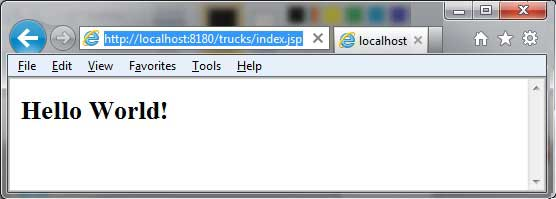
Eclipse 提供了一个很好的插件 m2eclipse ，该插件能将 Maven 和 Eclipse 集成在一起。
在最新的 Eclipse 中自带了 Maven，我们打开，Windows->Preferences，如果会出现下面的画面：
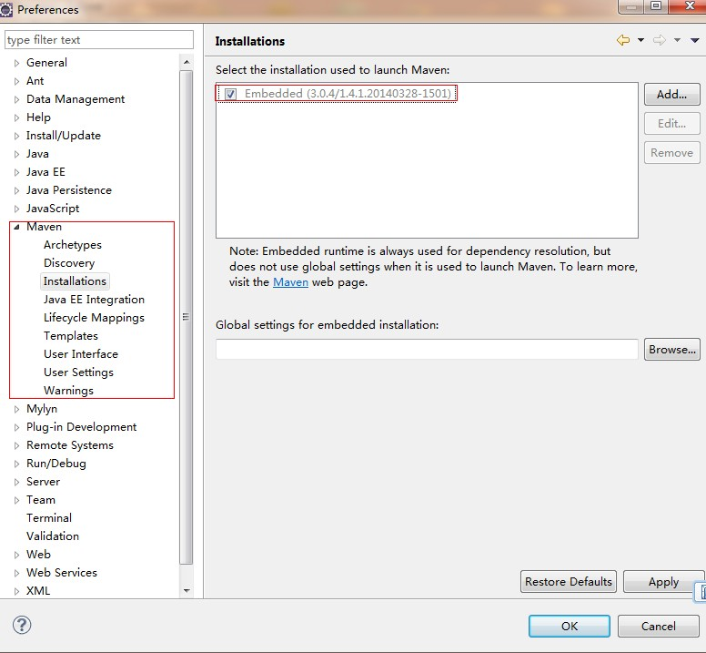
下面列出 m2eclipse 的一些特点：
选择 Maven Projects 选项。点击 Next 按钮。
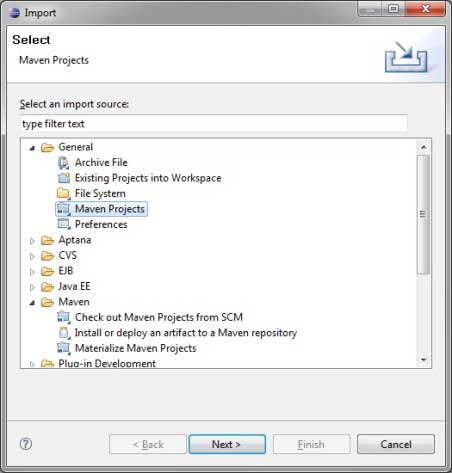
点击 Finish 按钮。
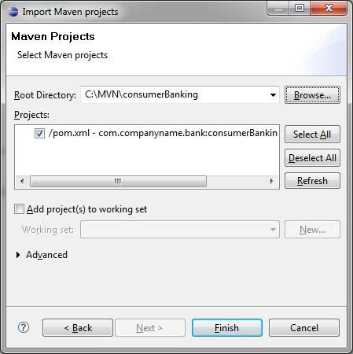
现在，你可以在 Eclipse 中看到 Maven 项目。
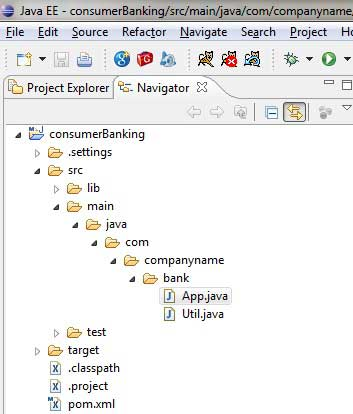
看一下 consumerBanking 项目的属性，你可以发现 Eclipse 已经将 Maven 所依赖的都添加到了它的构建路径里了。
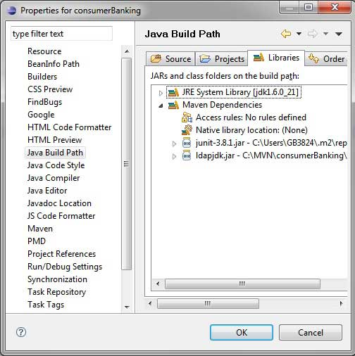
好了，我们来使用 Eclipse 的编译功能来构建这个 Maven 项目。
Maven 开始构建项目，你可以在 Eclipse 的控制台看到输出日志。
[INFO] Scanning for projects... [INFO] ------------------------------------------------------------------- [INFO] Building consumerBanking [INFO] [INFO] Id: com.companyname.bank:consumerBanking:jar:1.0-SNAPSHOT [INFO] task-segment: [package] [INFO] ------------------------------------------------------------------- [INFO] [resources:resources] [INFO] Using default encoding to copy filtered resources. [INFO] [compiler:compile] [INFO] Nothing to compile - all classes are up to date [INFO] [resources:testResources] [INFO] Using default encoding to copy filtered resources. [INFO] [compiler:testCompile] [INFO] Nothing to compile - all classes are up to date [INFO] [surefire:test] [INFO] Surefire report directory: C:\MVN\consumerBanking\target\surefire-reports ------------------------------------------------------- T E S T S ------------------------------------------------------- Running com.companyname.bank.AppTest Tests run: 1, Failures: 0, Errors: 0, Skipped: 0, Time elapsed: 0.047 sec Results : Tests run: 1, Failures: 0, Errors: 0, Skipped: 0 [INFO] [jar:jar] [INFO] ------------------------------------------------------------------- [INFO] BUILD SUCCESSFUL [INFO] ------------------------------------------------------------------- [INFO] Total time: 1 second [INFO] Finished at: Thu Jul 12 18:18:24 IST 2012 [INFO] Final Memory: 2M/15M [INFO] -------------------------------------------------------------------
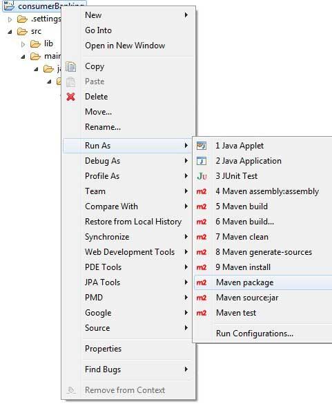
现在，右键点击 App.java， 选择 Run As 选项。选择 As Java App
你将看到如下结果：
Hello World!
NetBeans 6.7 及更新的版本已经内置了 Maven。对于以前的版本，可在插件管理中心获取 Maven 插件。此例中我们使用的是 NetBeans 6.9。 关于 NetBeans 的一些特性如下：
选择项目的路径，即使用 Maven 创建一个项目时的存储路径。假设我们创建了一个项目： consumerBanking. 通过 Maven 构建 Java 项目 查看如何使用 Maven 创建一个项目。
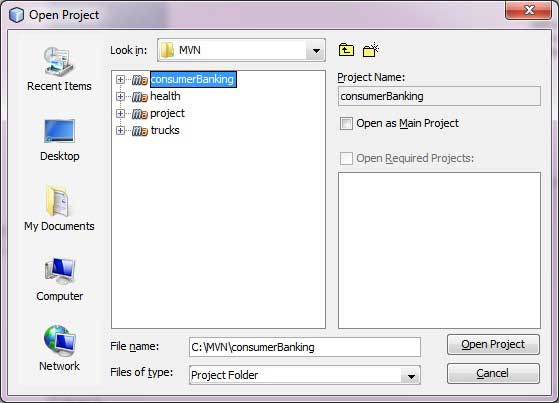
目前为止，你已经可以在 NetBeans 里看到 Maven 项目了。看一下consumerBanking 项目的 Libraries 和 Test Libraries. 你可以发现 NetBeans 已经将 Maven 所依赖的都添加到了它的构建路径里了。
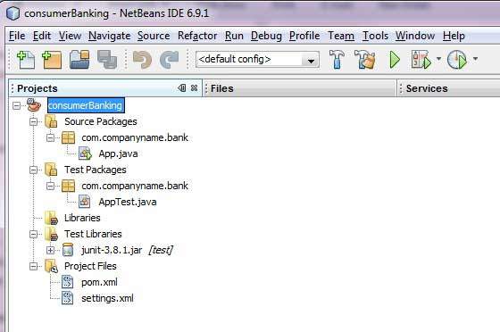
好了，我们来使用 NetBeans 的编译功能来构建这个 Maven 项目
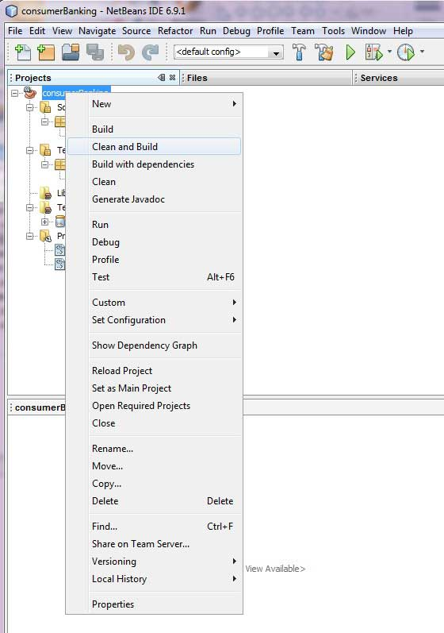
Maven 将会开始构建该项目。你可以在 NetBeans 的终端里查看输出的日志信息：
NetBeans: Executing 'mvn.bat -Dnetbeans.execution=true clean install' NetBeans: JAVA_HOME=C:\Program Files\Java\jdk1.6.0_21 Scanning for projects... ------------------------------------------------------------------------ Building consumerBanking task-segment: [clean, install] ------------------------------------------------------------------------ [clean:clean] [resources:resources] [WARNING] Using platform encoding (Cp1252 actually) to copy filtered resources, i.e. build is platform dependent! skip non existing resourceDirectory C:\MVN\consumerBanking\src\main\resources [compiler:compile] Compiling 2 source files to C:\MVN\consumerBanking\target\classes [resources:testResources] [WARNING] Using platform encoding (Cp1252 actually) to copy filtered resources, i.e. build is platform dependent! skip non existing resourceDirectory C:\MVN\consumerBanking\src\test\resources [compiler:testCompile] Compiling 1 source file to C:\MVN\consumerBanking\target\test-classes [surefire:test] Surefire report directory: C:\MVN\consumerBanking\target\surefire-reports ------------------------------------------------------- T E S T S ------------------------------------------------------- Running com.companyname.bank.AppTest Tests run: 1, Failures: 0, Errors: 0, Skipped: 0, Time elapsed: 0.023 sec Results : Tests run: 1, Failures: 0, Errors: 0, Skipped: 0 [jar:jar] Building jar: C:\MVN\consumerBanking\target\consumerBanking-1.0-SNAPSHOT.jar [install:install] Installing C:\MVN\consumerBanking\target\consumerBanking-1.0-SNAPSHOT.jar to C:\Users\GB3824\.m2\repository\com\companyname\bank\consumerBanking\ 1.0-SNAPSHOT\consumerBanking-1.0-SNAPSHOT.jar ------------------------------------------------------------------------ BUILD SUCCESSFUL ------------------------------------------------------------------------ Total time: 9 seconds Finished at: Thu Jul 19 12:57:28 IST 2012 Final Memory: 16M/85M ------------------------------------------------------------------------
现在，右键点击 App.java 文件。选择 Run File 选项。你可以在终端看到如下结果：
NetBeans: Executing 'mvn.bat -Dexec.classpathScope=runtime -Dexec.args=-classpath %classpath com.companyname.bank.App -Dexec.executable=C:\Program Files\Java\jdk1.6.0_21\bin\java.exe -Dnetbeans.execution=true process-classes org.codehaus.mojo:exec-maven-plugin:1.1.1:exec' NetBeans: JAVA_HOME=C:\Program Files\Java\jdk1.6.0_21 Scanning for projects... ------------------------------------------------------------------------ Building consumerBanking task-segment: [process-classes, org.codehaus.mojo:exec-maven-plugin:1.1.1:exec] ------------------------------------------------------------------------ [resources:resources] [WARNING] Using platform encoding (Cp1252 actually) to copy filtered resources, i.e. build is platform dependent! skip non existing resourceDirectory C:\MVN\consumerBanking\src\main\resources [compiler:compile] Nothing to compile - all classes are up to date [exec:exec] Hello World! ------------------------------------------------------------------------ BUILD SUCCESSFUL ------------------------------------------------------------------------ Total time: 1 second Finished at: Thu Jul 19 14:18:13 IST 2012 Final Memory: 7M/64M ------------------------------------------------------------------------
IntelliJ IDEA 已经内建了对 Maven 的支持。我们在此例中使用的是 IntelliJ IDEA 社区版 11.1。
IntelliJ IDEA 的一些特性列出如下：
使用新建项目向导来导入一个 Maven 项目。
选择 import project from existing model 选项。
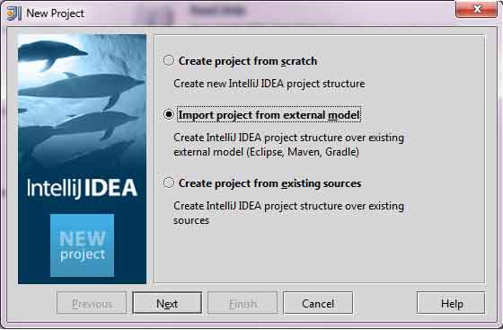
选择 Maven 选项。
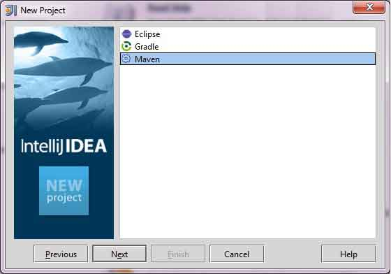
选择项目路径，即使用 Maven 创建一个项目时的存储路径。 假设我们创建了一个项目 consumerBanking。 通过 Maven 构建 Java 项目 查看如何使用 Maven 创建一个项目。
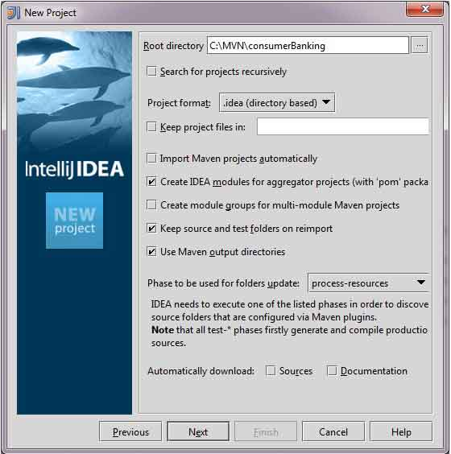
选择要导入的 Maven 项目。
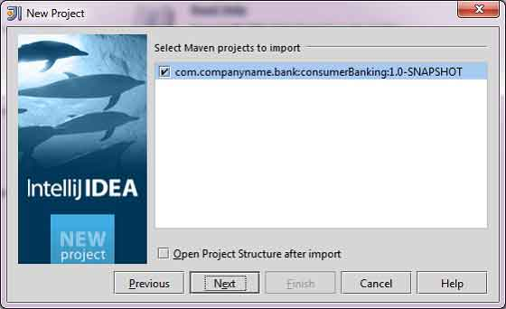
输入项目名称，点击 "finish"。
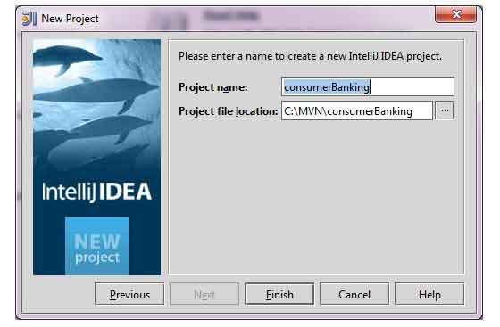
现在，我们可以在 IntelliJ IDEA 里看到 Maven 项目了。看一下 consumerBanking 项目的 Libraries 和 Test Libraries，你可以发现 IntelliJ IDEA 已经将 Maven 所依赖的都添加到了它的构建路径里了。
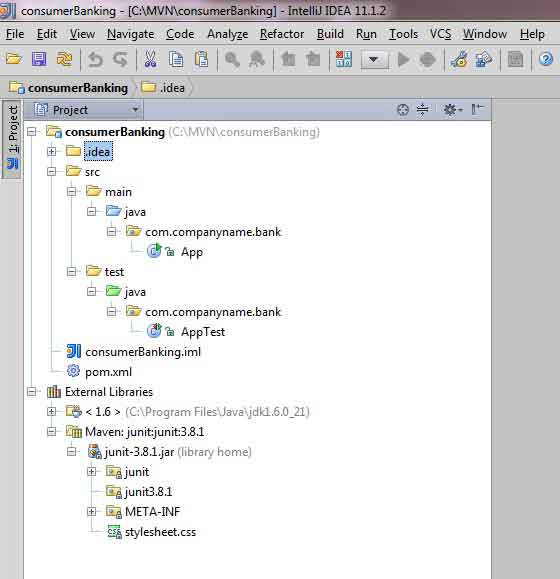
好了，接下来我们来使用 IntelliJ IDEA 的编译功能来构建这个 Maven 项目 。
你可以在 IntelliJ IDEA 的终端里看到构建过程输出的log：
4:01:56 PM Compilation completed successfully
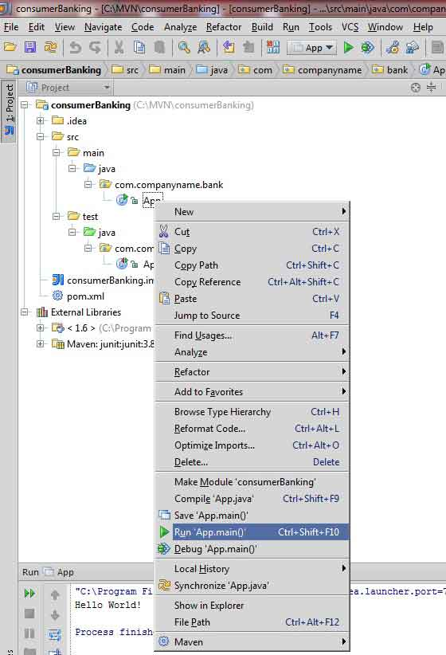
你将会在 IntelliJ IDEA 的终端下看到如下运行结果：
"C:\Program Files\Java\jdk1.6.0_21\bin\java" -Didea.launcher.port=7533 "-Didea.launcher.bin.path= C:\Program Files\JetBrains\IntelliJ IDEA Community Edition 11.1.2\bin" -Dfile.encoding=UTF-8 -classpath "C:\Program Files\Java\jdk1.6.0_21\jre\lib\charsets.jar; C:\Program Files\Java\jdk1.6.0_21\jre\lib\deploy.jar; C:\Program Files\Java\jdk1.6.0_21\jre\lib\javaws.jar; C:\Program Files\Java\jdk1.6.0_21\jre\lib\jce.jar; C:\Program Files\Java\jdk1.6.0_21\jre\lib\jsse.jar; C:\Program Files\Java\jdk1.6.0_21\jre\lib\management-agent.jar; C:\Program Files\Java\jdk1.6.0_21\jre\lib\plugin.jar; C:\Program Files\Java\jdk1.6.0_21\jre\lib\resources.jar; C:\Program Files\Java\jdk1.6.0_21\jre\lib\rt.jar; C:\Program Files\Java\jdk1.6.0_21\jre\lib\ext\dnsns.jar; C:\Program Files\Java\jdk1.6.0_21\jre\lib\ext\localedata.jar; C:\Program Files\Java\jdk1.6.0_21\jre\lib\ext\sunjce_provider.jar; C:\Program Files\Java\jdk1.6.0_21\jre\lib\ext\sunmscapi.jar; C:\Program Files\Java\jdk1.6.0_21\jre\lib\ext\sunpkcs11.jar C:\MVN\consumerBanking\target\classes; C:\Program Files\JetBrains\ IntelliJ IDEA Community Edition 11.1.2\lib\idea_rt.jar" com.intellij.rt.execution.application.AppMain com.companyname.bank.App Hello World! Process finished with exit code 0